CREATIONS OF THE TIME LORDS
Gallifreyan Artifacts and Tools

TABLE OF CONTENTS
Click on paragraphs to see color coding for sources
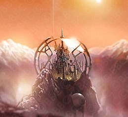
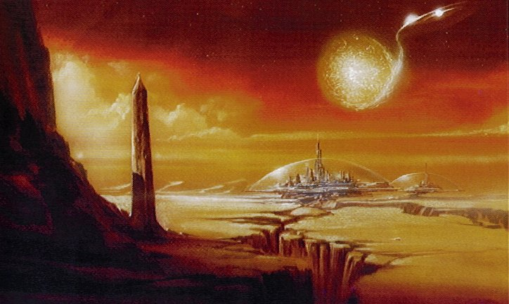
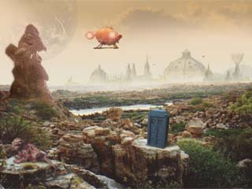


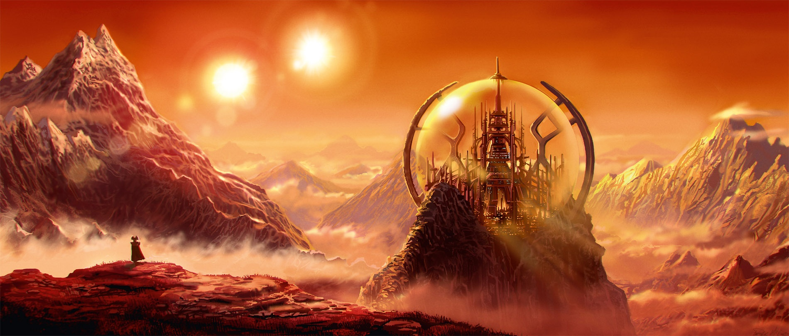
GALLIFREYAN CITY-COMPLEXES
Below
the Time Lords are the plebeian classes (non Time Lord) such as the
Watch guards, technicians, artisans, cleaners, engineers, cooks, and
musicians. Before the Time War there are only between 3 and 9 million Gallifreyans, most of which live in city-complexes other than the Capitol, scattered across the planet. Gallifreyan houses can be found on opposite sides of the planet. This small population leaves many roads and ancient settlements (such as Slothe in the Foothold Mountians near Mt Perdition) completely
abandoned.
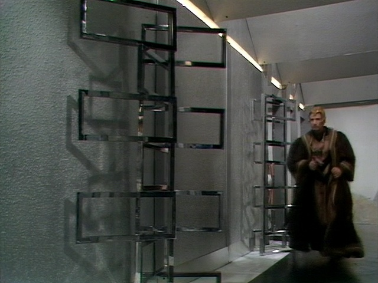
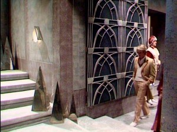
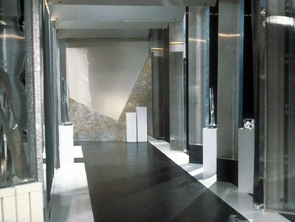
The cities of Gallifrey are filled with spires, temples, and cathedrals,
recreation
centers, libraries, universities, and loungeariums. The tunnels and walkways that
connect the different towers of a city-complex are known as cloisters. The ground-level streets are known as prospects. The ability to make structures dimensionally transcendent is used in most Time Lord buildings. Some of the computers on Gallifrey are the size of skyscrapers. Their buildings are opulently decorated with ionic columns, marble, and gold
trim. Time Lord architecture has been described as
'High Technology' combined with 'High Gothic.' by some, but others feel it
is closer to he human form known as Art Deco. Interiors are lit using visual stabilizer circuits which are capable of generating and controlling photons anywhere in the facility. This gives Gallifreyan interiors a natural-looking phosphorescence. In keeping with High Gothic traditons, most rooms on Gallifrey are, by human standards, deliberately under-lit. The decor of the Capitol (and presumably the buildings in other cities) can be changed in the same way that a TARDIS’s desk-top theme can be changed.
Using block-transfer computation, massive, transcendental,
buildings can be fabricated in place almost instantaneously. But
the architectural plans and virtual model must be completely worked out
beforehand.
Gallifreyan building materials are molecularly bonded, and plates have titanium rivets. The strong and ridged gravinium is the most common building material on Gallifrey. The valuable brass like machenite is the finishing material of choice for the interior of important
rooms. Lead is not a common building material and few on Gallifrey are trained in its manipulation.
Many areas of the city are rigged with panoptics that observe and record all activity. For this reason some areas are configured to project time bubbles that provide users with 5 micro-spans of total privacy. Gardens with carefully mowed grass are contained in their own glass domes. Maser-modulators are used to convert artron energy into thermal energy to produce heat. Normally the interior of Gallifreyan structures is quite sterile and its atmosphere is automatically-cleaned. The streets of the city complexes are patrolled by automated street cleaning mechanisms.
The walls of the living quarters can have their color changed by adjusting the contrast knob. Rooms have air vents and some have four bladed transparent ceiling fans to move the air. Gallifreyan living quarters smell of incense. Gallifreyan quarters have holographic TVs. These areas have a computer run diurnal (day/night) cycle. The lights are controlled by voice commands. The Auto-Diary option allows occupants to record entries by speaking in an empty room. Gallifreyan mirrors (even broken ones) can be configured to mirror-speak. This allows them to act as an audio-visual communications screen with any other mirrors in the area. The mirrors ring when a call is coming in. Gallifreyan furniture is kinetic and be re-arranged using a control panel. The Gallifreyan beds fold into the wall when not in use. The beds are rectangular but can be remotely adjusted to flex at any point. The Laundromat’s laundry circuits automatically repair, clean, and iron any clothes left overnight in the sleeping quarters.
Bath Rooms contain Gallifreyan organic waste handling systems. There is a sink and a holographic mirror. The taps dispense water at the precise rate and temperature desired. Bath Rooms have Zero-G Jacuzzi and antigravity Ultrashowers, which can be set to alternate with pulses of water and muscle oil that cleans, massages, and refreshed the body. Or an Ultrashower can clean using universal cleansing light - which if more effective then water and better for this skin. The Bath Rooms are also equipped with Autorazors. This small device crawls around the user’s head and, in less then 5 minutes it, can shave a humanoid face, provide excellent customized haircuts, and style and set a person's hair.
Prydos,
Arcalia, and Patrexi are
'academy' cities surrounded by basalt stone walls to keep the students from entering the outlands. The ground around each of these cities' entrances are covered in gravel-like Sound Shingles which
allow automated systems to detect people approaching the metal
doors.
The Lodge of the Patrexian Academy is located in the Capitol. It has a
gate of solid light with a sphere of the first gold ever formed in the
Universe (though it should be noted that most gold has no economic
value on Gallifrey). Olyesti is one of the Three Minute Cities in the East.
The Perdition city-complex is presumably located near Mt Perdition. The ruins of the town of Slothe can be found near Mt Perdition.

Arcadia City-Complex
Gallifrey's Second City of Arcadia lies to the south-east of the Capitol in the Arcadian Sector within the Arcadian Desert. The Palace of Arcadia is one of the finest restaurants in Arcadia City. Gallifreys sometimes swear by this city. The Lowlands of Outer Gallifrey are separated from the Arcadian Desert by the Myridian Mountains and it would take well over two months to walk from the Capitol to Arcadia (so at least 900 miles). By the War Era it will have become Gallifrey's best protected city.Prydos City-Complex
The Prydon Academy is located in Prydos City at the northern boarder of Southern Gallifrey. It sits at the base of the northern slopes of Mount Cadon (also known Mount Lung, Mount Plutarch, and Mount Rycadia) about 600 miles due south from the Capitol. Prydos is an old city built on an artificial mound in great plane. The city-complex lacks a dome and is open to the air. Most of the buildings are ebony colored and fortress-like, with glass towers and turrets along the top. Covered sky-bridges interconnect them. Perfectly groomed lawns filled with little blue flowers surround the buildings, with sand filled pathways leading between them. The fortress-like ebony buildings have glass turrets, which are accessed by covered sky-bridges. Imports from all over the galaxy (and from any point in time) can be found for sale at Prydos. Its streets are paved with mosaics which present the history of the city. The shops and stalls in the city of Prydos have foods from across the cosmos – even from the Earth and Venus. Concept shops in Prydos City sell ideas from across the cosmos.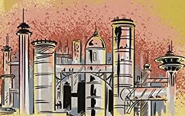
Sector 6: The Prydonian Academy of Time
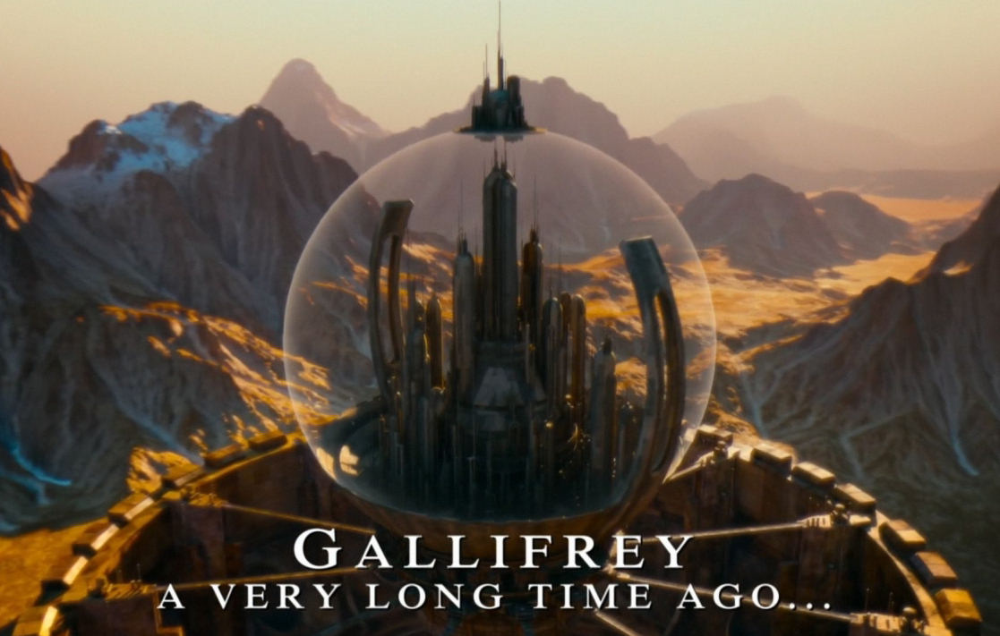
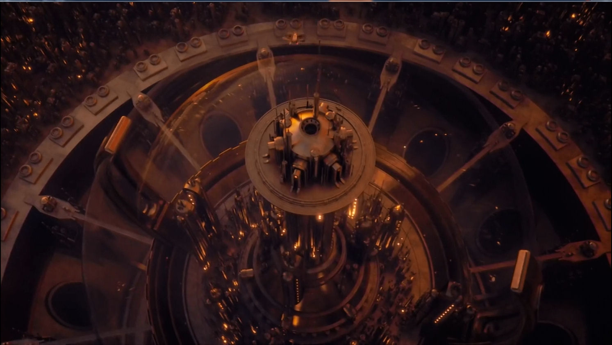
THE CAPITOL OF GALLIFREY
The Capitol is considered to be Gallifrey's First City. Several Time Lords use the word Gallifrey to indicate the Capitol (and not the planet in general). Its official name is Capitol City, but some very unreliable sources call it Sage City (possibly its name from the era of the Pythia?). Most Gallifreyans simply refer to it as "the Capitol."
The Capitol is just north of the planet's equator,
in
the wastelands at the heart of
the
continent of Wild Endeavor. It sits in the valley between snow the
capped mountains of Solace and Solitude. These are part of a desert mountain range
that stretches to the horizon.
The only thing that grows on these mountains a deep red grass. Mount Solace likely lay to the west of the Capitol, while Mount Solitude probably lays on its own to the east.
The northern base of the massive Mount Cadon (aka Mount Lung) is found around 600 miles to the south-west (just south of the nearby equator) and it dwarfs the Capitol.
During the time of the Pythia there was a volcanic chasm running through the Capitol known as the Crevasse of Memories That Will
Be. Rassilon redesigned the rest of the Capitol
after coming to power, and, in modern times, the remains of the Crevasse is located outside the Capitol.The Untempered Schism is located outside the Capitol to the south-west. The Capitol used to have a harbor on its east side
(but the sea dried up ages ago).
The Kasterborous Borealis can be seen from the Capitol, as can Mount Cadon. The Capitol was covered in snow for much of the year and might suffer from a bitter wind
from the Northern Lakes (located at least 200 miles to the north, if not more).
In Pre-Rassilite times the Capitol City was noisy and smelled of incense smoke. Heated streets kept the city warm in the winter. But in the Rassilon Era the entire Capitol is filled with a sense of silent timelessness. Gallifrey (the Capitol?) smells of cloisters, libraries, vellum, and old excitonic circuitry. The strong and ridged gravinium is the most common building material on Gallifrey. The floor plates have titanium rivets. Most of the walls in the Capitol are colored polarfrey-grey. This dull, pearlescent grey is supposed to be relaxing to Gallifreyans. More important areas, such as the Citadel have walls that appear to be made of aging stone with dim green light leaking out from the cracks. Marble is used extensively in the architecture. Unused corridors are filled with dust. The architecture is filled with fountains and alcoves. Candles are very common. There are also many gardens with their own domes. The decor of the Capitol can be changed in the same way that a TARDIS’s desk-top theme can be changed. Gallifreyans often to use the valuable, brass-like, machenite as the material of choice for the interior of important rooms.
One of the functions of the Central Matrix is to monitor all events in the Capitol and predict future developments within the Capitol. There is a dedicated Sub-Matrix which handles the basic functions of Capitol, like transductions.
Council members use transtubes and air-cars to get around inside the Capitol. There are at least 49 external metal gates that alow one to exit the Capitol at ground level. But many Time Lords actually never leave the Capitol. Most of these doors haven't been opened in a century. A small conventional spacedrome (with space ships) can be found just outside the Capitol dome (probably the Desiree Spaceport). time scaphes can be found docked the Scaphe Port.
The capitol is broken up into 6 numbered sectors and all the rooms are numbered (example Room 30007 in the Administrative Complex - probably Sector 3). Sectors 1-6 designate the Great Citadel and the High City towers attached to and protruding from the conical base of that structure. Sectors 7 and 8 designated the rest of the Capitol, and the New Towns outside the Citadel proper. Each of these Sectors is described below.
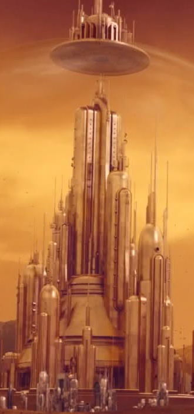
THE GREAT CITADEL OF THE TIME LORDS AND THE HIGHER CITY
The center of the Citadel is a turquoise colored hour-glass shaped tower that is designated Sector 1, while Sectors 2-6 designate the towers attached to and protruding from the conical base of the structure. These parts of the Capitol is known as the Higher City (to differentiate it from Mid-Town and Low Town). Sectors 7 and 8 designated the rest of the Capitol, outside the Citadel. Each of these sectors is filled with numerous cathedral like rooms of metal and glass. The Citadel is probably dimensionally transcendental and it would probably take about 73 days for one person to visit every part of the Citadel. Unlike most other areas of the city-complexes, most room in the Citadel are very well lit.
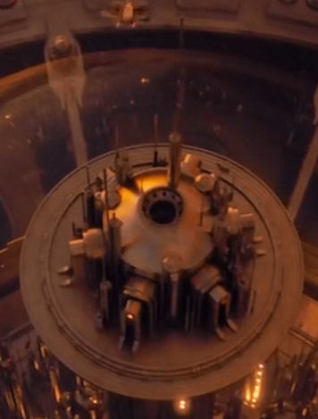
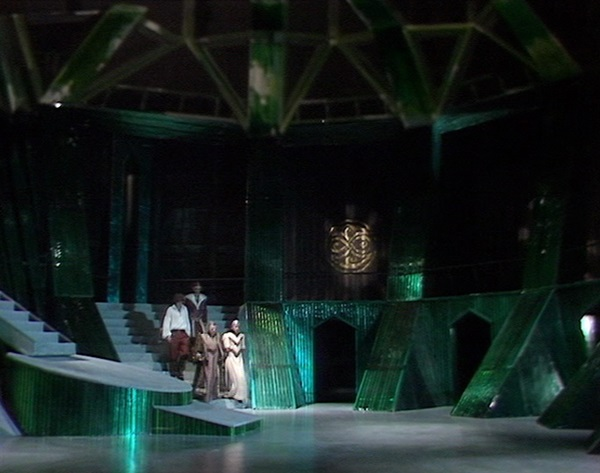 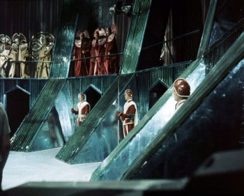 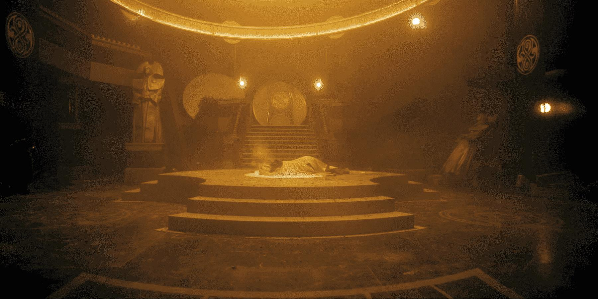
Sector 1: The Great Citadel
Located at the heart of Sector 1 of the High City, on Level 31 of the Citadel, is the Great Gallery of the Panopticon Hall. The name of this assembly hall is derived from the Eye of Harmony's ability to observer and 'see' all of space and time, and because an 'opticon' is Gallifreyan word for a village meeting place. The six walls of this debating chamber are covered with galleries and seats that ascend into the darkness. The dimensionally transcendental hall is so vast that it has its own weather systems (including occassional rain fall) and it takes an hour to cross the upper galleries on foot. The ceiling of the Panopticon Hall is a dome is made of temporalised glass crystals. The Panopticon's floor is made of marble. The interior walls are designed to glow with a turquoise color when he sun is shining on the Citadel. There is a 6 sided debating chamber located in the center of the room. A staircase folds down allowing the President to walk from his robing room to the Presidential Dais. There is an access point to the Power Mast of the Eye of Harmony located in this debating area of the Panopticon beneath the Presidential Dais. Due to the presence of the Power Mast, access to the Panopticon is forbidden to the general public. Except during ceremonial events, it requires the permission of an member of the Inner Council, like the Chancellor, to enter the chamber. These ceremonial events include graduation ceremonies. There is a 200 foot diameter Seal of Rassilon made of machonite inlaid with bone-white marble that hangs face down like a massive chandelier over the Power Mast. A display case in the Panoptican holds the Rod of Rassilon when it isn’t being carried by the President. While the details of the decor is left up to each Lord President, each wall has a black stone statue of a Gallifreyan heroes - one for each College. Though there is much debate as to who those six heroes are, it is known that Rassilon's statue is in the north, while Omega's was on the south side of the room. Another of the statues depicts Artron. There was a competition to see which College could build the biggest statue. This bankrupted the Scendeles College.
The Hall of Rassilon leads up to the Panoptican. This hall is filled with 'regenerating' statues of important Time Lords, like Apeiron, Mutanioa, Omega, Pandak, Pandak IV, Pandak XX, and Rassilon. On either side of the main entrance are antechambers and robing rooms where the ceremonial collars and robes of the Time Lords are stored. Many items of great worth or power are stored in the Panopticon Vault. The Panoptican also has a museum, and a canteen (which serves bread among other things). The Panoptican Security Complex has a bunker with a court room. Like Time Lords, the Citadel has two ‘hearts.’ One of these hearts appears to be the Great Chamber of the Matrix. Its located down a short corridor from the Panopticon. The Matrix Chamber is in the cone shaped base of the Citadel – but not directly centered under the tower. The Matrix Door found here allows authorized Time Lords access to the repository of all Time Lord knowledge. For more information on the Matrix see The Matrix of Time A famously effective polygonal Zero Room (created by the Other) can be found in the basement of the Junior Senate Block.
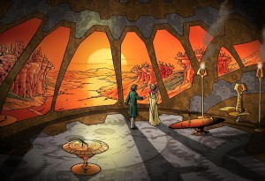
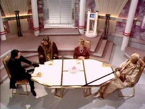
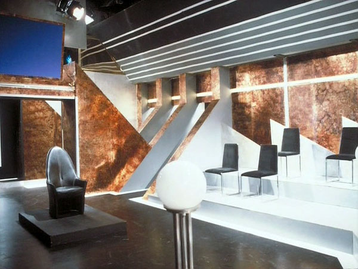
Sector 2: The Presidential Wheel
Sector 2 of the High City is known as the Presidential Wheel holds Rassilon's Presidential Palace and the various council chambers. The President's Office and the rest of the Presidential Palace is on level 5. Rassilon’s Palace always has guards stationed outside it. It has a marble floor. The Presidential Retreat is the name of the President’s office. This is the most powerful office in all of time and space. Rassilon’s Throne is found in the Presidential Retreat. The Presidential office has a massive blast screen that can retract so that one can view the rest of the Capitol.After the Vardan/Sontaran invasion, the security around the Presidential palace was upgraded to be the most sophisticated bio-monitoring systems in the cosmos. Even when not locked down, it takes someone with at least the rank of Captain of the Chancellery Guard's biodata and security pass to open the doors to the Retreat. Once locked down it requires lock burners or heavy weaponry to breach. A temporally reactive update can send a signal back in time to update security systems undoing a breach that has already begun. It needs presidential authority to enact. There are secret passages that use dimensional junctures to allow the President to move in secret to locations throughout the Capitol. Each President has added more and more passages connecting all parts of the Capitol (including the Omega Arsenal) to their Office.
Nested into one of the alcoves in the Presidential Palace, and located directly below the Presidential Retreat, is the Inner Council Room which was intended to be a private area for the President to meet with the rest of the Inner Council in secret. This room has a Matrix Portal mounted above the debating table (likely the President's 'personal' 8th Door) and a secret door that leads to the controls for the Time Scoop. This room is only used about once every thousand years and serves as a storage for lesser know artifacts of Rassilon. Normally the Inner Council meets in the Great Hall of Time where another of the Matrix Portals is mounted.
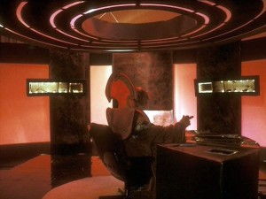
Sector 3: The Chancellery
Sector 3 of the High City holds the Chancellor's suite and office, as well as the offices of the Chancellery Guard and the barracks for guardsmen. The Chancellery itself is located on level 5.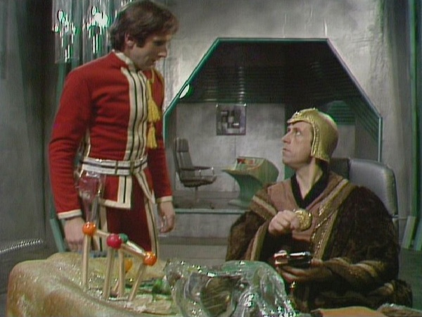
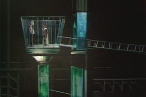
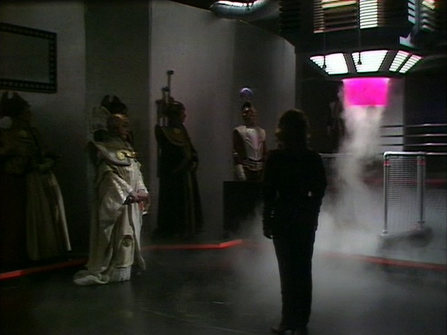
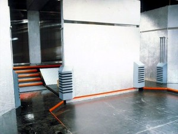
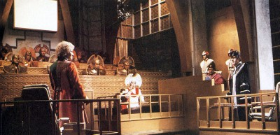
Sector 4: The Jasidary Building
Sector 4 of the High City is sometimes known as the Detention Sector. The Watch work in Sector 4's Jasdisary Building which is attached to the Citadel. The Jasidary Building holds 90 stories of administration offices. There are no windows on the first 30 floors. It was designed by the architect Apeiron and completes a rotation every 58 minutes. Gallifreyan court building are often set up with areas that can project time bubbles that provide users with 5 micro-spans of total privacy. Within the Sector 4 of the Citadel is the Security Compound where Security Control, the Castellan's office, High Court, interrogation cells, detention rooms, execution rooms, and the Oubliette Custody Suites are located. These luxurious suites are where prisoners are held (if they aren't sent to Shada). The large ornate suits have sleeping quarters, multiple bathrooms, a gymnasium and a small swimming pool. They are equipped with furniture, an entertainment wallscreen, and food and drink dispensers with vast menus. These Oubliettes are designed to sustain a Gallifrey for the rest of their lives. There are holding cells beneath the Capitol with deadlocks. There are several holding bays for timeships should a recall and mass time scoopings be necessary. A court room can be found in the deepest bunker of the Panopticon security complex.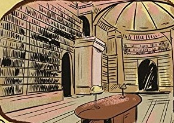
Sector 5: The Panopticon Archives
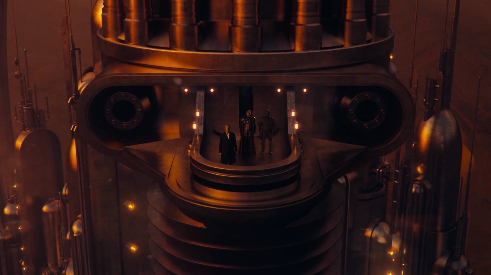
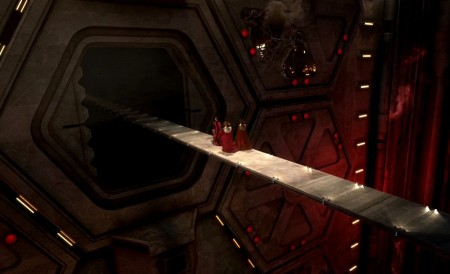
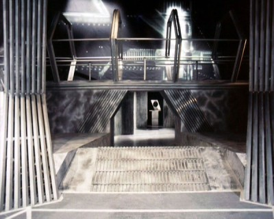
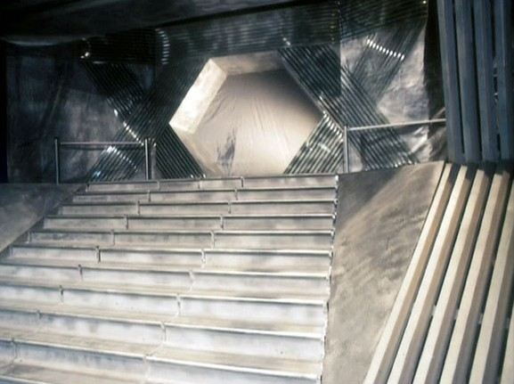
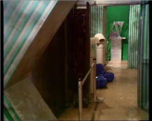
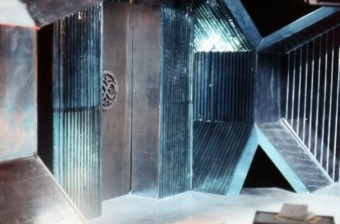
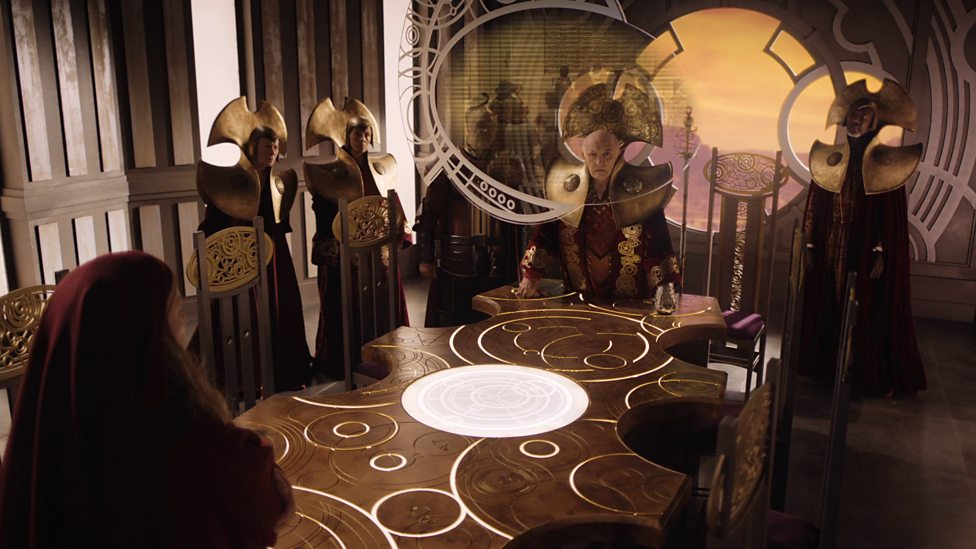
Sector 6: The Residential Wing and Time Academy
Sector 6 of the High City is the second largest sector in the Capitol. As its number implies, it is directly adjacent to archives of Sector 5. Its Residential Wing holds the offices and dormitories for all 1000 of the Time Lords of Gallifrey. Though the Citadel towers over the other buildings in Capitol City, the exterior isn't large enough to allow 1000 Time Lords to live in comfort. Fortunately it's interior is dimensionally transcendental and has at least 119 levels. The Cardinal’s Habitation Complex holds the living quarters for the Cardinals.This might be where Tower Gamma 6 is located.
Sector 6 technically extends out to cover the entire Prydonian Time Academy. Geographically speaking, the Prydonian Academy is a self-contained city located along the northern boarder of Southern Gallifrey at the base of the southern slopes of Mount Cadon (Gallifrey's highest mountain). Because this is Gallifrey's only Time Academy (the institution which bestows the title of Time Lord) it is annexed to the Citadel using dimensional junctures. The academy city like structure covers 28 square miles. The facility lacks a dome and is open to the air. Most of the buildings are ebony colored and fortress-like, with glass towers and turrets along the top. Covered sky-bridges interconnect them. Perfectly groomed lawns with little blue flowers surround the buildings with sand filled pathways leading between them. The majority of the buildings are dormitories, lecture halls, gymnasiums, and eateries. The academy has it's own TARDIS cradles and scaphe bays. The Black Collection is stored at this Academy and monks taking the Mystic Studies course learn dark secrets in the upper levels of its towers. Most (if not all) of the Junior Cardinals and Time Lord Councilors teach at the Academy.
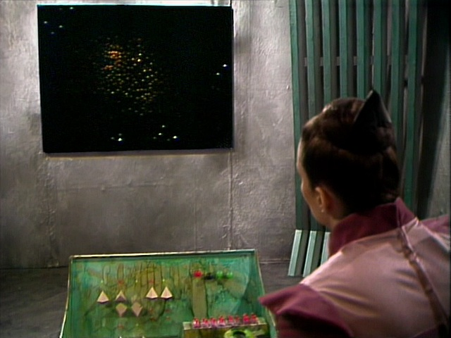
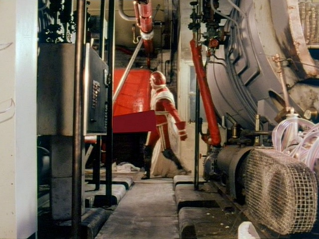
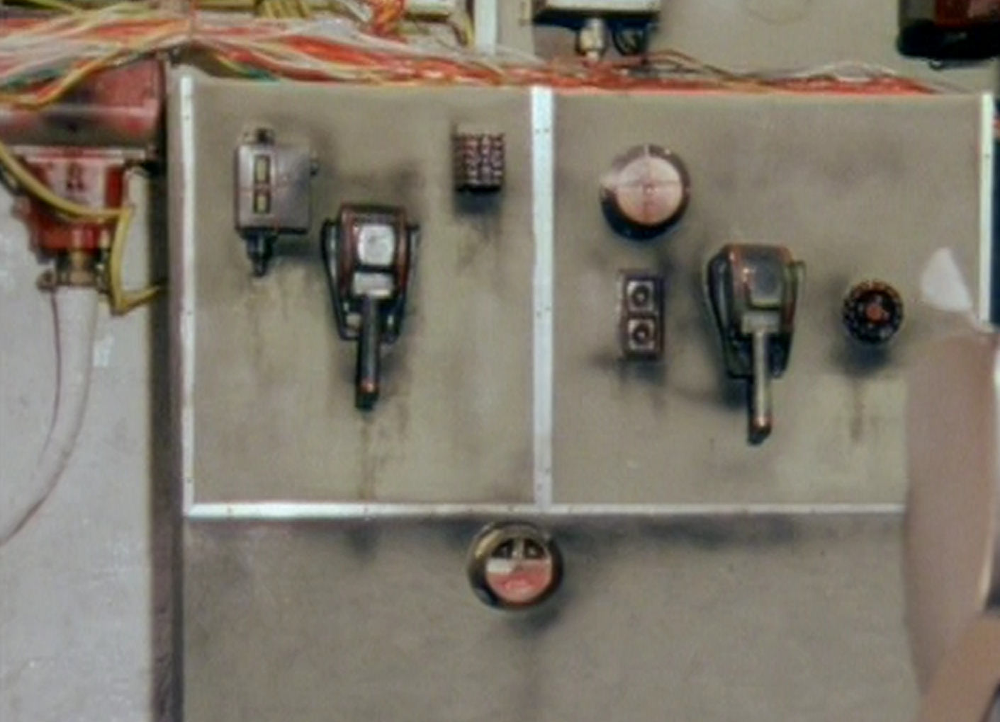
Sector 7: MidTown
Beneath the upper levels of the Citadel is Sector 7, which is known as MidTown. It extends all the way to the mountain side (either the mountain of Solace or the mountian of Solitude). There are a total of 363 towers made of white stone and gold arrayed in a circular pattern around the Presidential Wheel. Many of the towers are helical in design and many have circular gallifreyan inscriptions carved into their outer walls. There is a statue of Omega located just outside the Citadel which dates back to the Time of Legend (making it one of the most ancient features of the Capitol). The original Time Capsule Growth Foundry was located near this statue. Sector 7 of the Capitol is bordered by cloisters.The 53 story Communications Tower is just outside the Citadel in Sector 7. The tower holds Traffic Control, which is one of the highest security-rated rooms in the Capitol. Traffic Control has some of the best scanners in the entire galaxy and every ship passing through the Kasterborus Sector is carefully monitored. Because of the location of the Power Mast on level 31 of Sector 1, Level 31 of sector 7 of the Citadel also houses the controls for the Transduction Barriers and the Quantum Force-Fields.
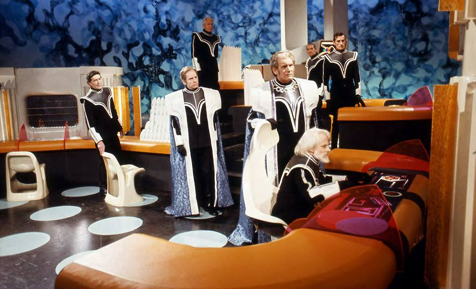
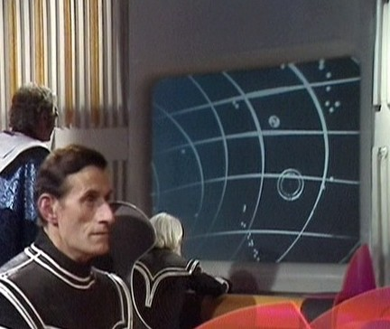
There are two huge towers in the north of the Capitol named Canonicity and Likelihood. Both of these building are among the few that are dimensionally transcendental. The Doctor's Trial in War Games was held in the tower of Canonicity. The tower of Likelihood might be home to the Bureau of Possible Events. Sector 7 might hold Tower Alpha 7.
MidTown has a Multi-Dimensional Art Gallery beneath the Capitol. It is filled with vast numbers of computer created paintings from throughout Gallifrey's history, but N-Forms are no longer displayed.
Scientific research is done in the Penansulix Scientific Structure (adjacent to Sector 4's Jasidary Building). Gallifreyan laboratories include everything from cross-dimensional wave scanners, psycho-telemeters (which can use a sample to trace the origin of an object), particle accelerators, oscilloscopes, lasers, electron microscopes, holographic magnifiers, a dimensional revisualisers, scanners capable of identifying life-forms smaller than a single proton, advanced DNA testing equipment, test tubes, and Bunsen burners. The Parachronistic Chamber (located deep in the Capitol) can regulate time distortions. Time Lords meet in the Artron Forum to telepathically discuss and exchange points of view. While meeting their excess artron energy is absorbed and routed to the berthing bays to supply TARDISes.
The Mortal Coil hospital complex has the best physicians in the Stellian Galaxy. These hospitaller-surgeons and thei meditechs wear high collared white robes that match the white walls of the complex. The complex has a retro-engineered Spare-Body-Parts Repository.
Other buildings include the Meditative Sanctums of Astral Harmony, the Temandra Pleasure Gardens, Gesyevva's Fingers (colonnades), Bureau of Political Advancement, the Temple of Capitol Guilds, the Office of Public Registry, and numerous massive workshops. There is also Pandak's Square where presidential inaugurations are sometimes held. Gardens are contained in their own glass domes.
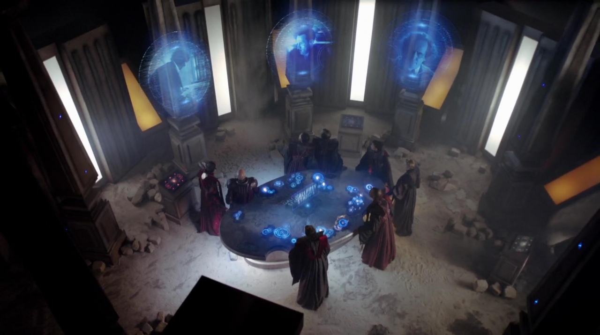
4th Circle: Tactical envisioning and clairaudient intelligence.
5th Circle: Perceptual warfare.
6th Circle: Extra-sensory camouflage.
7th Circle: Primary evolutionary and terrorogical research.
8th Circle: Deep Level Conference and Bunker facilities. The Nostrom Cloisters in the lower levels serve as a presidential bolt-hole.
Lowest Circle: The War Room where the Time War Council of the Great Houses meets.

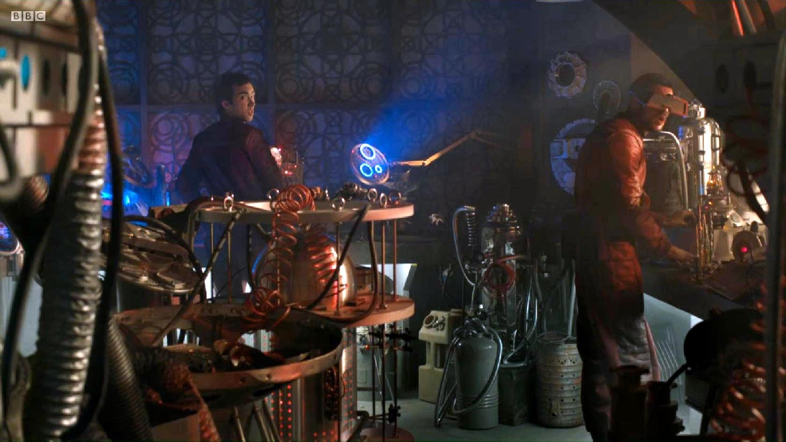
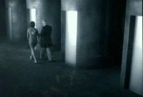
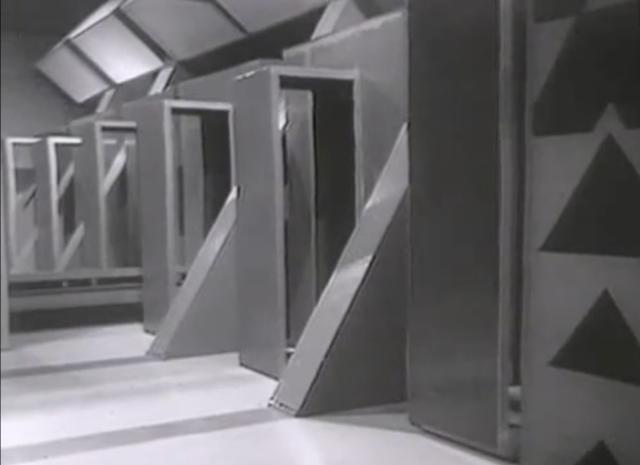
Sector 8: Low Town
Sector 8 is located in a cylindrical base beneath the city's spherical dome. The slums of Low Town (sometimes call the Lower Len) has formed around the pillars that support the Capitol. Most of the city's Gallifreyans including the poor live here. The structures built around the edge of the Capitol are also considered to be part of Low Town, despite this, the Sector still receives all its power from the Capitol. Low Town smells of wet carpet and roasted Grockleroot. Horse drawn gravicarts move over the cobbled streets. Real fish can be purchased here for eating. The Golden Grockle was a very rowdy tavern found there. Some old villas date back to the Old Time and have been restored to their original form. Hidden in the lower levels are cisterns and a shrines dedicated to the cult of Rassilon the Vampire.The cylindrical base of the Capitol also holds the Repair Shops. There are at least 19 Dry Dimension Dockyards on under level-14 and the Time Travel Embarkation Port located on below on under level-15. Despite this, its difficult to find TARDIS parking in the capitol. These landing bays can generate a dampening field that will prevent dematerialization. Quadriggers (aka Quantum Engineer) work in the maintenance levels of the Capitol and wear dark colored coveralls. With the event of the Type 54 they were replaced by the less prestigious Quantum Mechanics. During the War Era the levels beneath Sector 8 became a TARDIS Graveyards. (because the Time Lords no longer trusted the TT Capsules to safely make their way to the impacted dimension that held the traditional graveyard.)
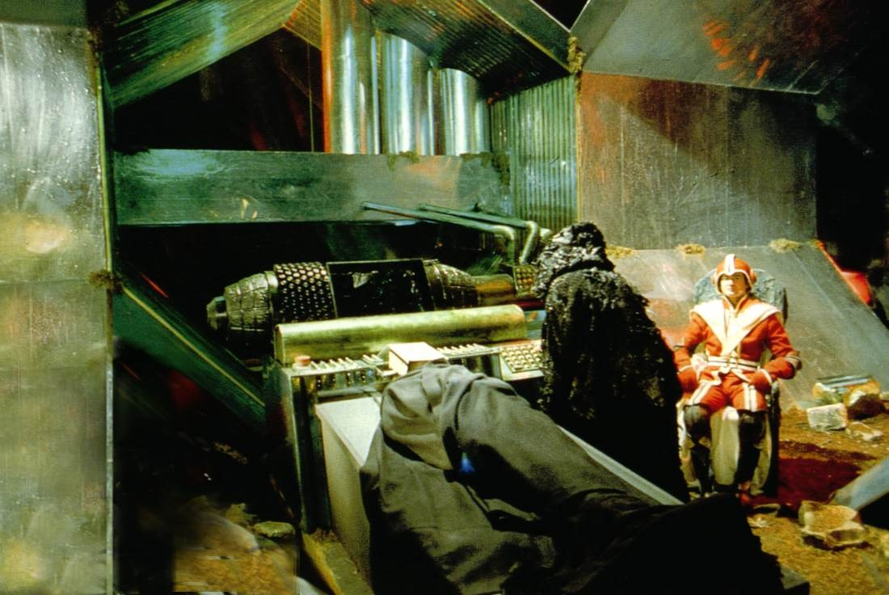
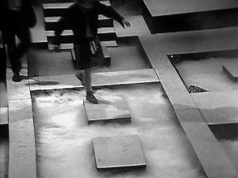
The Vaults
The foundation of the Citadel is known as the vaults. They are found in and around the massive caldera like hole beneath the Capitol city. These chambers date back to the Old Time. Traditionally, Time Lord bodies are interned in the Panopticon Vault 30 meters beneath the Panopticon. Hidden access shafts in Panopticon lead to foundations and the vaults. Life support for the Capitol is provided my huge recycling systems, such as tachyonic recreation fabricators to create physical materials, and the Main Water Pumping Station in the vaults of the Citadel. The Pumping Station is off limits to unauthorized personnel, even Time Lords. Within the Vaults can be found the power couplings for the eastern part of the Capitol, and a fluctuating access point for the matrix.Half a mile beneath the Capitol is the city's foundations, the remains of the original Capitol, including the once regal Pazithi Cloisters and other ancient temples. At the bottom of the caldera is the vault that holds the Eye of Harmony. Buried deep underground are fallout shelters and Catacombs whose total length (if arranged end to end) would exceed the diameter of Gallifrey (so over 24,000 miles).
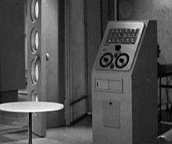
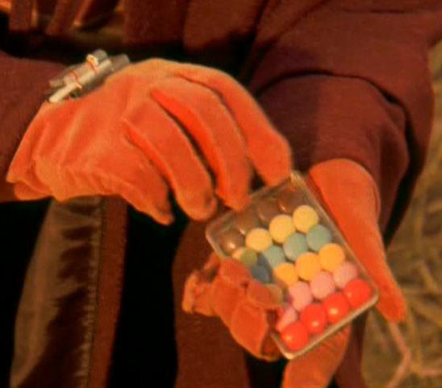
FOOD AND BEVERAGES
Adult Gallifreyans often have only one large meal a day - often a breakfast in the morning. Almost all sustenance is provided by Food Dispenser Machines and most Time Lords have never had to cook a meal for themselves. This technology has been the standard food souce since the Time of Legend. The workplace refractories have standard issue Time Fleet Food Dispenser Machines. A base stock of protein is grown in the form of genetically modified Promaze fungus which is kept in massive vats. This fungus undergoes molecular deconstruction using a non-variable oscillator that runs at 400 Hz and a low grade fluid link. This molecular rearrangement can create whatever a recipe requires. A manual/menu is provided to insure that the operator doesn’t accidently fill the room with food bars.
If a food machine has no recipes programmed into it then it produces an unpleasant protein compound. These Promaze Bars tasted like pond slime, but simple to produce in mass quantities and are quite nutritious to almost any life-form. However most food machines carry a vast number of recipes tailored to a Gallifreyan palet.
If given a small sample, a food machine is capable of replicating the flavor and texture of any type of food. But the appearance and color is limited to standard pre-programmed designs. Depending on the recipe, the synthetic food takes the form of tablets, pills, wafers, or white bars. The food bars can change flavor with each bite. All food arrives on paper plates.
Liquids are produced by in self-sealing bags, plastic bulbs, or wax paper cups. The water from a food machine has a very soft yet distinctive (probably sweet) flavor. All beverages except water appear as a light orange liquid. But the cups will have different patterns on them to identify their contents (such as stripes for hot chocolate). Beverages served in Gallifrey include pig-bear milk, and synthetic artificial tea replacement. Food machines can produce alcohol and such beverages include Milean Head Juice (a type of alcohol), and Bog-Truffle Tincture.
When food machines are not availible Gallifreyans eat freeze dried capsules, and bags of concentrated nutrition (such as biscuits, and stomach tablets). However, on special occasions, karmine pudding, dactyl eggs, magenta fruit, blue fruit, chocolate, broth, shortbread, oatmeal bread, gingerbread, South Western Corn Soup, gammon, tzaziki, cake, crayperry, roasted Grockleroots, Gallifreyan Pizza, and the Flan of Omega is prepared and eaten. Sealak meat is something of a delicacy. Vinegar is also used for food preparation, but most Gallifreyans do not like beef or onions. Cheese might not be found on Gallifrey. Shobogan Stew (made with rice, vegetables, and scraps of meat) and Spiced Rib of Baanjix are common dishs among the Outsiders.
Real tea is sometimes made. A Gallifreyan Tea Set has approximately 178 pieces, including a Samovar. An Unconscious Gallifreyans can often be awakened with boiling tea vapor. Wine is dated by the President who was in power a the time it was bottled. Orneilian Wine and Rassilon's Red (a fine Gallifreyan wine, bottled at the time of Rassilon) are well respected.
Gallifreyan also have stasis preserver refrigerators that keeps things fresh forever. Some of these refrigerators have fabricators allowing them to restock themselves. Gallifrey has devices that will alter the metabolism people so they won’t gain to much weight if they over eat. There is some evidence to indicate that people never need urinate or defecate while on board a TARDIS. This might also be true of the residents of Gallifreyan city-complexes.
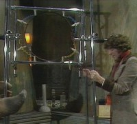
RECREATION
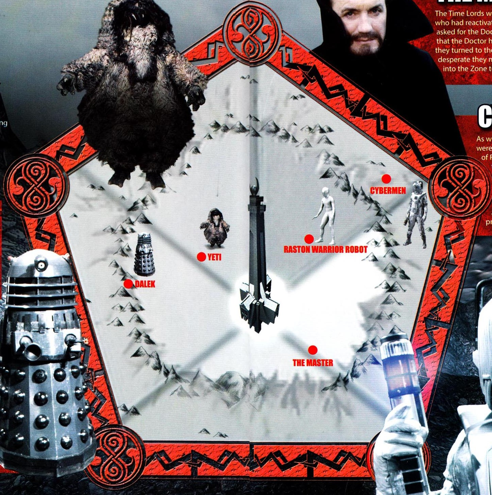
Old Times: The Games of Death
Sometime during the life of Rassilon, the Pythia decreed that all prisoners of war would be transported to Gallifrey , and forced to fight each other to survive. The survivors would gain their freedom. This became known as the Games of Death. The Games were considered to be holy and were probably a tribute to the Goddess Death. The Games might have started after the Kotturuh judged the Shobogans with their gift of Death. The games also served as an outlet for the stresses of the telepathic group mind of Shobogans.
The architect named Rassilon designed the Death Zone. The Death Zone (or Forbidden Zone) is a pentagon shaped valley in the southern hemisphere about the size of North Wales. It serves as an arena for the Games. The zone is filled with a huge variety of traps. There are ruins of a great city in the Death Zone - a city that was devastated and flattened by some catastrophe a long time before The Five Doctors. Some areas of the Death Zone can only be reached by going through unstable cave networks or going over very steep mountains. White sand from Mirphak 2 is imported for the Death Zone because it shows the blood better. (Possibly because of the force field) the sky above the Death Zone is blue.
The Shobogans of the Gallifreyan Empire purchase numerous slaves from the Monaxi slavers to fight in the Death Zone. Many of the slaves are from Oshakarm, Tersurrus, and the Star Grellades. In addition, species throughout the cosmos are kidnapped using the Time Scoop and forced to fight in the Games for the entertainment of the people of Gallifrey. This includes Mandrels, Hypnotrons, Drashigs, and Autons of the Nestene Consciousness. Species from the two ends of eternity fight in one giant paradox.
Figurines of every organic being added to the Death Zone are laid out on a board. During the Dark Times the Games are constantly were constantly being player and the Gallifreyans watch them on their Public Access Channels.
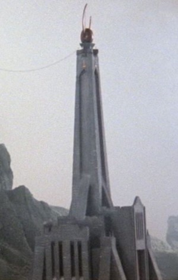
Rassilon's Great Dark Tower
After the start of the Vampire invasion, and around the time that Gallifrey started experimenting with stellar manipulation, the Dark Tower (or the Great Tower) was constructed in the center of the Death Zone. The architect Rassilon designed it, and for this reason it is sometimes known as the Tower of Rassilon. The original function of the tower was to surround the Death Zone with a powerful force field that can trap even a TARDIS. The tower had three entrances but was filled with traps. Any survivor of the Games who reached the heart of the Dark Tower would gain their freedom.
Eventually the Death Zone is shifted into a temporal bubble. While the weather in the Death Zone be controlled, it is always set for wet and rainy. By this point, several alternate playing boards can be overlaid upon the Death Zone (such as a maze of joined space stations and space craft). The walls of these environments are made of a metal alloy created in zero gravity, and they can be remotely disabled. These alternative play environments are stored in an artificially-created pocket holding dimension when not in use. Only a TARDIS would be capable of entering the environments stored in the pocket dimension. All players on those boards are trapped in this pocket dimension when the board is not in use.
Once the Time Lord’s Eye of Harmony was anchored the operation of the Death Zone’s time bubble began causing interference with power from the Eye of Harmony. Despite this, it took 1003 years before Rassilon's CAT and Cardinal Pandad convinced Rassilon to end the Games. And they were only successful because some of the players nearly capture the Dark Tower. The ending of the games was known as Rassilon's Reformation. Rassilon sealed the Death Zone and bans the use of the Time Scoop. The location of the Time Scoop, as well as many other of Rassilon's secrets, are recorded in the Black Scrolls of Rassilon. Those who protested the loss of the Games were placed inside the Death Zone.
Rassilon secretly places one of the eight doors to the Matrix inside the Tower in the Death Zone. Physical immersion in the Matrix can be accomplished using one these doors using a copy of the Key of Rassilon. These doors use an astaneaus beam of light evolved from thydostanic kinesectoral energy to shift the user out of time and rationality and into the Matrix's thought space. Rassilon also created a secret sub-matrix in a secluded part of the APC Network.
570 after the end of the Games the Time Lords, led by Pandak, rebelled against Rassilon's cruelty and tyranny. He is probably found guilty of Article 7 (genocide). Rassilon is chained by the Chancellery guards and entombed in the Dark Tower in the Forbidden Zone. The Dark Tower becomes known as the Tomb of Rassilon.
Rassilon’s lifeless body is assumed to be frozen in stasis in the tomb. Unknown to the Time Lords, Rassilon is not dead. When he physically entered the Matrix Door in the Tower his mind became part of his secret Sub-Matrix of the APC. While Rassilon’s body remained in the tomb in eternal sleep his mind gained awesome powers. For example can put a Time Lord’s mind into temporal orbit and use this time to communicate with him, but he rarely does this.
By this point Rassilon has set his immortality trap. Legends and fair-tales tell of Rassilon’s Ring of Immortality which he is said to wear while lying in state in the Dark Tower. Any Time Lord who reads the Black Scrolls of Rassilon will be led to play the Game of Rassilon with the reward being true immortality. But in reality, after fighting their way through the Death Zone, they will be trapped in stone with Rassilon forever. Inside his tomb he leaves one warning of this trap. An obelisk that states (in Old High Gallifreyan)"To lose is to win, and he who wins shall lose." Some will come to believe that this trap was set to remove Time Lords who had dangerous amounts of ambition, but others think Rassilon set the trap to ensure that no one could challenge him when he returned to power.
Not too long before the end of the Last Great Time War the High Council secretly approve Rassilon's construction of the Possibility Engine. Several dozen Time Lords were specially retro-engineered to have their biodata in a constant retro-evolved state between every incarnation, suspended in the iterative midst of every regeneration simultaneously. They become Interstitials locked into a constant state of metacrisis. There were about 50 Gallifreyans who were experimented on before a successful candidate was found. These prototypes were all dumped in the Death Zone. In the end, it was former president Borusa who was successfully forced into the retro-evolved state. Borusa was wired into the Possibility Engine which was connected to the Matrix so that the Vortex could flow through his mind. The Engine was able to sift through all possibilities of alternate time and find specific desired outcomes. Rassilon dreams of a future where all Time Lords have these abilities. The Possibility Engine was created in the Capitol but moved to the Dark Tower because no one but Rassilon wanted to look at it. Once the Doctor discovered this, he removed Borusa and used his abilites to d-mat the Daleks and their resources inside the Tantalus Spiral.
Sensory Tanks
Time Lords appear to enjoy isolating themselves from the ambient complexity of Gallifreyan life. While some make use of swimming pools, most Gallifreyans prefer to use sensory tanks like those found in the Quantum of Solace. The oxygenated liquid the subject is immersed in sooths away all stress and worries and induces dreams that fulfill the user's deepest and most wonderful virtual reality fantasies. While floating in the fetal position a Gallifrey can experiance exotic sensory replications include speed-skating on the frozen moons of Plattos or climbing the sulfurous active volcanoes of Ignos. The water is imbued with oxygen, nitrogen, chlorine, dopamine, and protein chains (which contains the intelligence of the Sensory Chamber). The chambers use timers to awaken the user, though a switch inside the chamber can also be used to deactivate the chamber. A Director of Calm oversees operations. Other Gallifreyans prefer the even more complete relaxation of retreating to zero environments.Public Register Video
Media entertainment holovids are provided by Public Register Video and Public Access Television, which is is viewed on holographic plasma image media-screens. They can also be viewed in 5-dimensional cinemas, but such telepathic holograms can only be experianced by Gallifreyans. Public Register Video covers all major ceremonies and traditional events. There are over 87,656,432 Public Access Media Services channels. There is a Presidential Bulletin issued every day with all the news about Capitol. The Observatories provides official reports of what has happens throughout the cosmos. Much of it focuses on stellar weather patterns. They have entertainment transmission (which sometimes broadcasts videos of emergency regenerations). Telepathic holograms can only be used by Time Lords, but undergraduates sometimes watch forbidden low-resolution thought-prints of the adventures of Omega that had been stolen from the Matrix by long dead cardinals. It should be noted that Time Lord culture has no mass media and the only news source read by them is the Daily Presidential Bulletin. House and TARDIS is a Time Lord magazine. It is bigger on the inside then on the outside so that it can hold a near infinite number of loose leaf advertisements. Many Gallifreyans write in 500 year diaries.
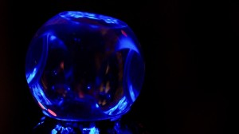
Art
On Gallifrey all paintings are done by computers. The computers use a stasis cube to create a pocket parallel universe
created from a slide of real time. The
multidimensional paintings are bigger on the inside then the outside and are composed within a frozen moment
of time.
The technology is similar to, but much more advanced than, the banned miniscopes. Tapestries can be found decorating rooms where an old fashion look is desired. The faces of Gallifreyan statues occasionally
change shape to show off the different incarnations of the Time Lord
they represent. Gallifreyan
works of art are made so that they look aesthetically pleasing even
when they are decaying and falling apart from old age. The aging is
"part" of
the sculpture.
The
concept of caricatures is unknown to Gallifreyan art. Air Sculptures
are common on Gallifrey and reguarded as a very sophisticated art form.
Gallifreyan eyes can see them, but they are invisible to human eyes.
The Patrexes are an order of artists aesthetes, and might be related to
the Gallifreyan Subjunctivists who are know for their paintings. The
Multi-Dimensional Art Gallery in the Capitol is filled with vast
numbers of computer created paintings from throughout Gallifrey's
history.
Music
The pianalaika is a Gallifreyan instrument which is something of a combination of a piano and a guitar.
The Harp is another common instrument on Gallifrey.
There
is a small bronze-looking spherical insturment, usually covered in High
Gallifreyan glyphs. When held, it emits music that reprents the
user's current emotional state. Gallifreyan
white noise symphonies are known for being somewhat loud. They
keep track of popular music on a top twenty music chart. Gallifrey doesn’t have sea shanties. The Time Lords are exceptional dancers. The Foxtrot of
Rassilon is a Time Lord waltz. Shobogan folk dancing is quite common
and somewhat energetic.
Other Activities
There are Xeno-Zoos to visit that hold alien creatures from other worlds. While some Gallifreyans smoke pipes or cigars, most Gallifreyans view smoking as a very stupid activity. Gallifreyan tattoos move about the body (and change size) with each regeneration. Some seedy Gallifreyan Cardinals hang themselves to get rid of extra regenerations. This is considered to be a dangerous hobby. Wreck-Riders are young Time Lords (probably Junior Time Lords) who go joyriding in damaged TARDISes.
Gallifreyan and Time Lord Games
Junior Time Lords (and others with symbiotic nuclei) would also play the Perigosto Stick Game. This form of Time Lord Juggling, involves using Time Lord powers to keep a 4-dimensional rod with a sphere or cube at the end in motion, without letting it fall back into the normal space-time continuum. This technique is called Transmigration of Object and was often done as a party trick, even though it usually took hours of preparation. Most Perigosto Sticks are also designed as musical wind instruments and the Time Lord can try to use the shift in air flow to play music while juggling the stick. Shifting everything in a defined area forward a few seconds in time creates an impenetrable black wall. This is sometimes done on a small scale as a parlor trick. The Cardinals always warn the students that Transmigration of Object damages their biodata.
The people of Gallifrey invented Chess. Chess is game found on almost all the civilized worlds of the cosmos – a reflection of the games that the Higher Evolutionaries play with the Lesser Species. Gallifreyan chess allows one to have three or more kings on a single side. Capturing a king is not allowed. Four-D Chess is a popular Time Lord game (though some Time Lords prefer Three Dimensional Chess). Not only can the pieces move on three vertically stacked boards but they can also move forwards and backwards in time. However the First Law of Time must be observed during play meaning that the its possible to get the other player to lose by forcing him to create a paradox. And indeed this is a common way of winning. Gallifreyan Chess Sets are sometime custom carved to look like a Time Lord’s adversaries and allies.
Gallifreyan Chequers has 2 colors - red and white. Pieces include: Presidents Cardinal, President's Commander, Chancellor's Castellan, Gold Usher's Captain.
Gallifreyan playing cards are round and have the following suits: Flames, Owls, Clouds, Souls, Deeps, Mesmers, and Dominoes. Face cards include the Hand, the Duke, and the Rogue. They can use these cards to play Five Dimensional Cribbage.
Sepulchasm was a game for one or two people that was created during the Old Time. The board was shaped to represent a mountain range with colored models of various House marking a path of squares. There was a playing piece of matching color for each house. Each player would control three of the pieces and using two 8-sided dice to dictate their pieces movement along the path. A roll of 4 on one die and 5 triggered a Sepulchasm which would split the board down the middle. The player(s) used psychic powers to keep their peices suspended over the chasm. The first player to fail to keep their pieces in the air lost.
The only known/accepted athletic sport was zero-grav hyperball, which used balls and rackets.
Gallifreyan Labyrinth Game: The point of this game is to get your opponents lost in a (dimensionally transcendental?) maze and then manipulating their movements by subconsciously training them to make certain turns. At the height of its popularity there were Labyrinth games on every street corner and even in the Panopticon.
Mindbending (aka Time Lord Wrestling) is a Time Lord game that involves a telepathic battle between two contestants. They try to regress each other mentally through their previous incarnations. Psychic duels often take the form of a physical wrestling match within the minds of the contestants and telepathic observers. Mindbending is just a game but it can end in deathlock if a contestant is pushed back to the point of looming.
While at the Academy Initiates often play Eighth Man Bound. This extreme 'rite of passage' claims the lives of 15 Gallifreyans every macrosemester. A symbiosonic generator is used, and the student's classmates (called The Inquiry) sit around him and chant his name while the student tries to predict his future incarnations. An Arcalian managed to discover what his first seven bodies but couldn't see his eighth. Thus the Arcalians named the game Eighth Man Bound.
Scratchin is another Gallifreyan game.
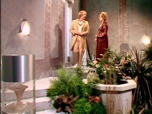
EXCITONIC TECHNOLOGY
On Gallifrey, machines take care of virtually every need. While modern warp matrix engineering is relied upon for most temporal and spatial manipulation, Gallifreyan material fabricators and synthetic clothing dispensers still use tachyonic re-creation generators.Gallifreyan technology no longer makes use of any internal moving components, like ball bearings, or cogs. Sonic baffles are used to make even very noisy machines silent. During the Time of Legend, the founder, Artron, studied and rationalized a psychotronic energy that became known Artron energy. He developed a whole new form of technology known as excitonics (or occasionally artronics) that used impulses of psionic energy to relay signals. The most obvious benefit of this comes from the fact that psychic pulses travel at a 170,000 times the speed of light. This made excitonics vastly faster than light-base optronics.
Many of the most advanced and important pieces of Gallifreyan technology and computer index files are protected by a bio-morphic shield that requires the user to have the correct Time Lord biodata to access and operate them. Most of the steel doors and even many TARDIS systems rely on Gallifreyan retinal scans to prime/activated them. All of these retina prints are controlled by the APC which holds the Retina Master Print. Important security systems are protected with ultra-locks which can be dead locked, and some of their security systems are telepathically based. Given enough time, a Gallifreyan lock-burn can breach and pretty much any door on the planet.
Gallifreyans dislike robots, considering them primitive. Despite this, city-complexes are patrolled by cleaning machines and automated street cleaning mechanisms. They sometimes use a scouring agent that melts through anything that's not temporalised crystal. This Scourer is used to clean the Panopticon dome clean. The agent has an extremely strong scent. Most of the dust that settles in the capitol is made of mica.
During the Time of Legend, when Time Lord society was founded and anchored, the Time Lords were capable of desigining and producting Level 11 technology. But after Rassilon’s time, the people of Gallifrey turned away from the barren road of technological innovation. This was taken to the point where, in pre-War era, the technology of the Time Lords had fallen to Level 10. Indeed, some worlds view Gallifreyan excitonics as being prehistoric junk. It generally takes centuries (or more) for obsolete technology to be formally recalled and replaced on Gallifrey.
The Amplified Panatropic Computer Network
The APC Net (Amplified Panatropic Computer Network) is the essence of Gallifrey and its culture and acts as a repository of all the knowledge and history of Gallifrey. The fact athat both Gallifrey's network, and the Matrix are panatropic computer networks has caused some confusion. But the Matrix of Time is only a small part of Gallifrey's planet wide APC Network. Some of the computers on Gallifrey are the size of skyscrapers. All Time Lords and Academy Students are guaranteed access to the APC Net.Vidilinks provide video and audio communications across the planet. A standard Gallifreyan computer terminal keyboard has 723 letter keys, and 13 numeric keys across the top. But retina interface technology and retina-screens have virtually replaced all but the most basic manual keyboard interfaces.
Some Time Lord technology uses lime-green chronomium for their memory cores. Many examples of Time Lord technology have circuits with a internalised synchronous back-feed reversal loop. This temporal technology allows the circuit to send back responses just before the input signal first triggers the circuit. Such circuits emit a ‘shimmer’ of chronons as a side effect. Memory wafers (like those used in K-9 Mark II) are one of the most common computer elements in Gallifrey technology. On Gallifrey they are easy to purchase in bulk.
Since ancient times, Gallifreyans use info-stamps when they need to physically transport information. While these data crystals come in several different shapes, small glass bars and data-cubes are the more common ones. They can be plugged into a TARDIS console but can interface with any Level 5 or higher computer just by being put in physical contact with it. The info-stamps can be broken in to pieces, but, in such a state you need to reassemble all the parts to retrieve any of the data. One of these bars can hold ALL the languages of an entire galaxy, for all of its recorded history. These memory banks store the energy of perception and memories (aka artron energy) in high enough densities to be lethal if improperly discharged. Lesser species could find exposure to such memories would override their own personal memories.
Telepathic Induction Circuits
Technically, all excitonic circuitry are ‘telepathic’ in that they all use psionic energy to store an relay information. Telepathic induction circuits are excitonic circuits linked, via a signal conversion unit, to telepathic interfaces made of cerebral grey matter. This allows the induction circuits to directly, and telempathically connect with a living organic mind. The standard induction circuit is a cylinder 2.5 cm in diameter and 7.6 cm tall.Powerful and complex systems (such as TARDISes) often use telepathy to label the readouts and controls. Telepathic ‘chimes’ can also be used to alert the user. Only Gallifreyans can sense these telepathic holograms.
A signal conversion unit controls and limits the ambient telepathic energy that is received by a telepathic induction circuit. A user needs access to a dedicated thought channel to interact with a given device. The telepathic circuits can then relay signals from the Gallifreyan's mind to the computer that controls the device in question. Such thought programs allow one to operate, alter, and program devices using one’s mind. They can be used on devices such as time rings and sonic screwdrivers, eliminating the need for complicated controls. A signal conversion unit has firewalls that can be set up to protect the circuits from a psychic attack. A unit can also lock on to, and jam, specific frequencies of psychic signals.
Telepathic induction circuits are capable of assisting Gallifreyans in dealing with mental invasions. The circuits can be used to destroy some types of parasites within a person’s brain.
If exposed to theta emissions (say from a Dorganator) the telepathic circuits will fall in to a feedback loop, which can cause the minds of the TARDIS crewmembers to swap bodies. A Time Lord's knowledge of corporelectroscopy should make undoing this even relatively easy.
Telepathic circuits that have corroded to the point of dissolution can leak artron energy in such a way that a Time Lord could telepathically reach back in time a few hours and contact themselves. Selkatonin can be used to repair overloaded telepathic circuits, however this substance is considered to be a restricted material by the Time Lords.
Image Reproduction Integrating System
A Image Reproduction Integrating System (IRIS) is a thought projector that uses a headset to reads the users mind. A telepathic induction circuit allows any psychic to present their thought patterns and memories on a visual display unit screen, creating a visual image of their thoughts. A contra-inductor button allows the user to broadcast an amplified telepathic message from their own mind to a specific target some distance away. The circuits can be set to mind-dictate mode which records the thoughts of the user. An IRIS can even edit memories out of a user’s mind.Because of their artificially extended life span, Gallifreyans need to clear out some of their memories every few thousand years. Telepathic induction circuits allow them to edit out unwanted memories to free up their brains for new experiences.
More important memories are usually saved in memory store. The data in a memory store is usually saved in memory acids controlled by a memory management system. Memory acids are adaptive, self-repairing, and semi-intelligent. Memories stored this way can also be uploaded into the minds of another user.
Induction circuits are capable of wiping memories of severe trauma from someone, but the subconscious damage will still remain. Gallifreyan memory wiping techniques aren't totally reliable and the memories often reappear as dreams. A Gallifreyan Memory Integrator can be used to fully recover blocked memories. For more extreme modifications Gallifreyan psychosurgeons are needed. Focused neural tampering (memory blocking) with a Time Lord’s memory centers leaves bruising on their neo-cortex.
These machines should only be used by trained personal. If the induction field is set too high whilst a user is editing his memories, and IRIS runs the risk of accidentally copying and erasing the memories of any lesser species that is in the area.
Telepathic Thought Projection
This psionic amplifier uses an array of telepathic circuits to amplify the users own thoughts and desires and transmit them. But Telepathic Thought Projection (TTP) is more than just a means of communications. The powerful rho waves are used to induce hypnotic induction on a specified target.The more telepaths who are using the device the more powerful the effects. The users must keep their head in a transparent helmet like head-set while using the device. The amplifier’s effective range in Normal Space is about 3 kilometers, but rho wave relay generators can be used to extend this. If the amplifier is located in the Space-Time Vortex, the signals can be sent to another capsule in the vortex.
A single Gallifreyan using TTP has a 95% chance of successfully controlling human. But, with a large enough gestalt, even a Time Lord with high artron levels can be controlled. Unfortunately these telepathic commands can often be detected by other telepaths in the area, and it generally pretty obvious to bystandars that the controlled subject is acting abnormally.
The CIA is the Time Lord organization that makes the most use of TTP. Usually this is done to remotely override the will of members of lesser species to get them to act as the CIA wishes. Preparations for a TTP intervention are extensive and often require temporally suspending the targeted time zone in a time bubble while they are completed. While Time Lords are capable of moving and perceiving this bubble, all lesser species will be unknowingly frozen in time.
Care should be taken in the use of this device. The rho patterns generated by the amplifier have been known to cause significant malfunctions in other nearby unshielded excitonic circuitry.
Resonance Engine
This device is an incredibly powerful version of a neural amplifier. In massively increases any psychic abilities that the user might have. The user needs to be physically installed in the machine to make use of its benefits. At higher settings, with a powerful enough mind, there is the potential of psychic feedback to destroy the engine and its user. The device’s potential for destruction was such that the only set of plans for the Resonance Engine were buried in an obscure part of the Matrix, and all public references to the technology were redacted.Artron Transducer Power Cells
Gallifreyan technology is often powered by neutron batteries of transducer power cells. These power cells are filled with artron energy. A single fist sized cell might hold an entire omega of artron energy. These batteries are held in zybanium cradles. Large numbers of these storage cells are often used to provide independent power or to act as an emergency power units.Power units made up of collections of transducer cells (like those found on TARDISes) can absorb massive amounts of almost any type of energy (including electrical output from a nuclear reactor). The Power Cells are even capable of absorbing the raw artron energy of a Time Lord’s future. Assuming it retains even atto-omega of power, a single power cell can be charged up if a Time Lord donates a dose of artron energy equivalent to 10 years of their life. It will take about 24 hours to convert this energy into a storable/useable form.
The energy of one of these cells can be discharged and telepathically guided so that it only arcs to the desired targets. Using a hyperspatial loop this the energy from a power cell can can be transferred to a TARDIS’s transpower System. A single power cell give a TARDIS five minutes to attempt a space-time jump, and is more than enough for a TARDIS to exit the Vortex.
Fusion Booster
A fusion booster is an advanced piece of Gallifreyan technology that can convert large amounts of anti-matter into matter without disrupting its structure and nature. It needs a high pressure source of water to fuel it.Fabrication Dispensers
Gallifreyan fabricators use tachyonic recreation generators to recreate physical materials using tachyons. With the variety of dispensers found in every city-complex, Gallifreyans can manufacture almost any substance in practically unlimited quantities including gold. Common fabricators can produce anything that a Level 6 star-faring society could build. They can even create complex devices such as a sonic screwdriver. Special dispensers are needed to produce some materials, such as mercury or zeiton-7. It should be noted that some Gallifreyan technology is made of non-atomic matter and thus can’t be fabricated with this system.The fabrication process takes a lot of time and requires large amounts of energy. During the Time Wars the restriction against using temporal orbits (a minor violation of the Laws of Time) was lifted. This allowed objects to be fabricated instantaneously (from the viewpoint of anyone outside the fabrication facility).
Clothing
Gallifreyan synthetic clothing dispensers use tachyonic re-creation generators. Malfunctions in the generators can result in poor stitching. Fashions only change every few millennia and robes are, by far, the most common form of dress on Gallifrey. Indeed, clothing dispensers will automatically fill robing rooms with identical outfits, unless othewise programmed. Such robeing rooms are filled with rails and racks of clothes (though even Time Lords think its excessive to have an entire room devoted to the storage of only hats). These wardrobes have been described as 'wibbly-wobbly' as they allow the user, from an outsider's perspective, to change their clothes instantly. Dresser servants are trained to match the robes to fit any occasion.
A large number of layers of clothing and the brightness of colors of the fabrics seems to be indicated of high status on Gallifrey. Ornate ‘battle’ collars are only worn for ceremonies, but most Time Lords always wear a skull cap. Chancellors wear their chapter's colors but with an excess of gold trim. The Prydonians wear scarlet, orange, and gold. Arcalians wear green and brown robes. The Patrexes wear heliotrope and burgundy robes. The Cerulean Chapter's colors are a subdued light blue. The Dromeian colors are probably silver-gray. The Scendeles Chapter's colors are quite subdued - probably light yellow. Lower class Gallifreyans might even see a lack of of multilayered clothing and subdued colors as being a sign of comraderie.Black and white robes appear to indicate Gallifreyans who are not currently acting in alignment with any particular Chapter. CIA robes are simpler than other governmental robes and usually either gray or black and/or white. Inquisitors and Lord Presidents traditionally wear white, while Valeyards wear black, robes with white trim. The gold robed Gold Usher handles ceremonies involving the High Council, while Bronze Usher oversees the Supreme Court of Guardians of Gallifreyan Law.
Gallifreyan transdimensional pockets can be linked together so that something placed in one pocket can be accessed from a different pocket in a different garment. Almost all Gallifreyans wear Video Communicators, either on a wrist band or attached to the back of their glove. By the end of the Time War some Gallifreyans will regularly wear very long scarves.
A Gallifreyan Laundro-Demat dematerializes anything laid out in the sleeping quarters in the evening down to its component molecules, The next morning the clothing will be reassembled, free of dirt and stains. Any needed repairs will be done, and the unwrinkled clothes will be lightly scented.
Panoptics
An inspection panoptic is a personal holographic camera that is easily carried. They are standard equipment on a TARDIS. They can record still images or video and are extremely resistant to damage. The videos are recorded on small discs inside the panoptic. Panoptics have two apertures, giving them the ability to record three-dimensional images. A projector is required to view the holographic images in 3D.There are also larger, mounted, panoptics. They hold several discs to increase the amount of images stored. In addition to the features described above, they are equipped with poly-directrix lenses. Poly-directrix lenses can see around objects, allowing them to create fully three-dimensional holographic images. By connecting the lenses to a TARDIS’s image translator and carefully controlling the dynanometer needles the operator can direct the lenses to spy on the interior of a ‘nearby’ TARDIS. It should be noted that these lenses only provide visual data, not audio. Poly-directrix lenses are standard equipment on Type 45 and more advanced TARDISes.
Isomorphic Security System
Many pieces of technology rely on Gallifreyan retinal scans to prime or activate them. These can be used to limit a device to a specific species, or to a pre-selected group of individuals. For further security, an isomorphic security system and advanced anti-theft protocols can be included. If the isomorphic security system is activated, it will use a series of deadlocked voice print, finger print, and palm print scanners to ensure that only one single authorized user can operate the device.The bio-lock an isomorphic system uses is incredibly difficult to break, even for Gallifreyans who are experienced security specialists. Even if a thief does eventually manage to bypass the bio-lock they will find that the anti-theft protocols will interfere with the device, making its operation unpredictable. It is difficult, but not impossible, to compensate for this system.
Scanning Sense Transduction Barriers
A common security system used to protect sensitive systems and Gallifreyan bases are Scanning Sense Transduction Barriers. In theory, the laws of physics make it impossible to pass through one of these barriers if you aren’t carrying the right key. While fully functional sense barriers are virtually impossible to breach without the correct key, in practice, the chronon buffer will often slip out sync causing anyone who touches one to be able to pass through. The intruder will experience temporal lag in the form of visions of their recent past or imminent future.Zeno’s Paralocks
The Time Lord Zeno invented this lock design. It places aeons of time between the outside world and the door, aging anything that approaches the door to dust before it can reach it. A typical time barrier would contain 16,000,000,000 years, and could only be bypassed if the person carried all three keys. One of these keys is a TARDIS key (to ensure that only Senior Time Lords can unlock the door). It has been claimed that Zeno only ever built three paralocks, and its known that one of them was used in the Galactic Seed Vault. Lord Zeno dubbed his paralocks to be the most secure locking mechanism in the Universe. But some experts have opined that a paralock could be breached in only 48 years of relative time using the highly illegal Noughtweed and a time propagator.Psio-Linguistic Translator
Psio-Linguistic Translator is a translation Voice Integrator was invented by a Time Lord named Therde. The device telepathically conveys the “gift” of translation to the Time Lord, allowing him to understand any language.This Translation Unit is part of the extruded telepathic circuits inside the time column on every Type 32 and all later model TT Capsules. Because of the natural unconscious psychic defenses of the people using it, these translator circuits require a lot of power.
The Telepathic Circuit will determine the local language by scanning within its field of operation. If meaning and structure is detected by the circuits, the new languages are stored in the Language Bank for future reference.
The Integrator will then provide a very sophisticated and very accurate two-way translation for the Time Lord. This is done by telepathically altering the brain by implanting a translation loop into the mind of the user. The result is that they perceive the local language as being Gallifreyan and it will appear to the aliens that the Time Lord can speak any language.
The Integrator even provides lip-sync, so that it both looks and sounds like people are speaking the traveler’s language. The process picks up on most subtle nuances of conversation without trouble.
A fully functional Integrator will automatically alter the crew's names so that they sound normal to local aliens.
For example, when translating the word TARDIS into another language the circuit will translate the words Time And Relative Dimension in Space and then make a new acronym from that.
It will also alter the Gallifreyan’s dialect to match whichever regional or cultural group they are currently speaking to at the moment. Conversely, the translated speech of local aliens is often given an additional accent in order to convey the alien's social class or educational level. If someone deliberately tries to speak something other than their own language, the voice integrator will translate it into the chronologically nearest version of the speaker’s native tongue. The accuracy and appropriateness of these accents varies depending on the reliability of the voice integrator.
Using the temporal grace circuits, the translation circuits can also be set to filter swear words out of conversation. Care must be taken with these settings, as, sometimes, the language and dialogue is so profane and obscene that the Integrator will have trouble producing anything intelligible.
A voice integrator needs to have a Time Lord ‘in the circuit’ in order for it to extend the gift of translation coverage to the lesser species. Other sapient life-forms generally gain its benefits using the Passenger Adoption Scanning Terminal (PAST) found in all TARDISes. In most cases, anyone who is onboard the TARDIS when it dematerializes is screened and adopted by the system. Once a crew member is adopted, the rho waves telepathically alter the subject’s brain, implanting a translation loop. If the subject is not familiar with Modern Gallifreyan they will hear their own native language.
While there is a limit to the distance at which the Voice Integrator can reach, its range is well beyond several light-years. If a new language is encountered beyond the integrator’s range, then a Time Lord will have to concentrate to focus their synapses so that they can translate alien text. The language skills the integrator provides, stick around even if the integrator is removed from range. While some Time Lords appear to be to indefinitely retain every language the integrator has ever given them, most lesser species find that that their recall of previous languages is minimal.
The effect is so seamless that inexperienced aliens often don’t notice that they can suddenly speak and understand alien languages. Indeed, the integrator is usually configured so that lesser species won’t notice its existence – even if it is translating for them. This illusion can be much more difficult to maintain if the subject remembers being unable to communicate with a specific species or cultured before receiving the gift. This auto-conditioning can malfunction if the subject has been hypnotized or inebriated. Some people even have difficulty telling the difference between what they are thinking and what they are saying.
The system can be re-configured to provide automatic translations for those that have not been processed by the PAST. Under these circumstances a Time Lord can extend the translation field to translate for any people who are near them. And some TARDISes have been known to in selectively ‘adopt’ certain acquaintances even if they haven’t traveled in the TARDIS. However, without the PAST this type of alternation is more likely to be noticed by the natives. If a user is aware of how the Voice Integrator alters their mind, then they can, with significant concentration, bypass its effects and hear the language as it actually sounds (and see the text as it actually appears).
Since the system is part of the telepathic circuits, it can be disabled if every symbiotically linked Time Lord are mentally incapacitated (such as post regeneration trauma). Under such circumstances, the Voice Integrator will not function until the Time Lord has recovered.
The Voice Integrator can translate any vocal language because the speaker has a mind that can be read, and the system can easily handle the scent based communications used by many nonhumanoid species. Older voice integrators have been known to have trouble with artificially constructed languages, like Esperanto. These are often beyond these integrator’s capabilities, as are some extremely complex languages, such as Foamasi, many Australian Aboriginal Languages, and Welsh. The Integrator will often fail to translate the speech of aliens from universes with different physical laws. The Integrator can't translate extremely primitive languages (like those of the Zarbi) without assistance from the Animal-Language Translation Circuits. Normally the TARDIS selectively disables these circuits to prevent the crew from being overwhelmed by messages from passing non-sapient animals.
The telepathic circuits can be combined with the Voice Integrator to cause a person's words to come out backwards. The system can also be retuned to become delocalized, providing the crew with the simulations communications of every being within translation range. But, in most cases this provides little more than an overwhelming babble of noise. A red switch controls the translation circuit. If the switch is reversed it will have a “Tower of Babel” effect, making it impossible for anyone within the immediate area to communicate.
Translation circuits are normally configured to a setting that translates text as well as dialogue. But written text must already be stored in the Data-Banks in order to be translated. This limitation exists because text has no mind that can be read by the Telepathic Circuits. Since the translation matrix is based on pre-programmed languages, this system is even simpler then than voice integration, and such text translators have been standard aboard TARDISes since the Type 26.
It does take a Gallifreyan degree of concentration for the translation matrix for begin working when they look at a new form of written text. Text messages will appear with different font-styles for different languages.
Even if you don’t know how to read the translation unit will (if properly configured) upload reading and writings skill for authorized users. However it will still take a few days of practice to be able to fully access these skills.
In normal configuration a the unit won’t translate any form of Gallifreyan writing because it is assumed that all users are Gallifreyans and know how to read it. But the translation matrix can be re-configured so that Gallifreyan text will be readable by off-worlders. Languages whose written form is very abbreviated or ideographic (such as Osiran Hieroglyphs) can cause the Integrator difficulties.
By the end of the Time War, the only written languages not included in the data-banks are ones that have been described as "impossibly old." But some advanced societies have discovered that irradiating an object with theta particles will prevent Gallifreyan translation circuits from being able to translate any text found on that object.
One of the Hands of Omega
The Hands of Omega
Remote Stellar Manipulators
Back
before the Eternal Wars, Rassilon decided to create and harness a
singularity as a power source. Such a singularity would provide power
for centuries of time travel experiments. With the help of Roppentheomjer (aka Roppen the Idealist), the stellar engineers Omega and Rassilon created the first prototype remote stellar control manipulator.
The stellar manipulator Omega built was named the Tear of Isha. The prototype took the form of an orb the size of a small moon. Inside, spherical flying robots called orbs which maintain systems and provide security. This manipulator is the most powerful device the Gallifreyans had ever created at this point in their history. When powered up its surface emits a bright white light, with glowing crossed rings around it.
Prototype Remote Stellar Control Manipulator
The Regeneration Codex
While there was a computer interface inside the manipulator designed for manual input, Omega crafted a disk shaped remote controller designed to be worn as a large medallion around his neck. This can be used to control the manipulator from a distance. Recognizing the immense power of the manipulator and danger that would occur if it fell into the wrong hands, the controller was designed to be isomorphically bonded to his own specific DNA. Individuals (even non-Gallifreyans) could be authorized by the bonded Gallifreyan to use the controller.
If the controller was ever separated from the bonded user, it would transport itself across the Astral Vortex to their coordinates. The manipulator was so dependent on its controller that if the controller was ever destroyed the manipulator would also self-destruct. However the controller was built out of the same materials as the prototype; meaning it would take the energies of a star (or the manipulator itself) to destroy it.
With Omega is serving as the chief stellar engineer, Rassilon led a fleet of Starkillers to test the prototype manipulator (the Other is not part of this mission). Unfortunately, Rassilon, Omega, and eventually the Other (sometimes known as the Timeless Child) ended up having to deal with a great deal of trouble caused by this prototype stellar manipulator.
The prototype was used to explode a device within a yellow star. The star collapses into a singularity, punching a hole in the part of the Astral Vortex that served as a foundation for the star. but there was no event horizon to separate the singularity from Normal Space. (At this point the Time Lords had yet to invent event horizons and black holes). The naked singularity created a gap in history itself, ‘denting’ the space-time continuum. Vast tracks of the Great Vampire’s dark universe are devastated by these wormholes. Throughout the galaxy, dimensional holes opened and thousands of Great Vampires swarmed into Normal Space. Few of Rassilon's Starkillers survive their first attack.
The Hand of Omega
Twenty-four years before the anchoring of the Eye of Harmony, Omega and the Other (aka the Timeless Child) begin the final stages of constructing of the new remote stellar manipulator. Omega refers to the new manipulator as the Hand.
This new Hand can be considered to be alive. The manipulator contained an amplified panatropic network that functioned in a way similar to how the Matrix of Time later would. It was programmed using Old High Gallifreyan. and could even store digital copies of people’s minds.
Using warp matrix engineering, Omega was able to fit all of the technology of this new manipulator ‘inside’ a copper colored metal casket. If you look inside all you see is a vast brilliantly white mist filled void. Like a TARDIS, the interior of the stellar manipulator can be shaped and customized to have almost any appearance. Once the stellar manipulator is activated, it unpacks itself into a brightly glowing sphere, with glowing crossed rings around it, expanding to the size of a small moon.
Twenty days later the stellar engineers finished creating the new Hand, and revising and updating the prototype manipulator. The Tear of Isha was now only a coffin sized rocket when inactive. Both Hands had much the same capabilities. Omega proclaims that his Hands will liberate the Gallifreyans from the chains of Time. On hearing this, Rassilon decrees that the manipulators be known as the Hands of Omega. He does this for political reasons.
They are designed to customize stars and are able to harness and manipulate the entire power output, in all is various forms, from any kind of star. It can even remotely drain off and store the energy off the Prime Eye of Harmony on Gallifrey. In just a few minutes this would disable all of Gallifrey’s time travel facilities. Like the prototype, it can release enough thermal energy to boil the oceans of G-type world. That energy can also be released as gravitational power to pull all the matter of a star into a gravitational singularity or rip a star system apart, but it would no longer require a fleet of Starkillers to do so. The Manipulators can also stop the broadcast of artron energy from the Eye of Harmony to the TARDISes, and, if focused properly, can rip out the heart a TARDIS.
Like the prototype, the new Hand has the ability to fly under its own power and initiative. Both manipulators were now equipped with a vworp drive that let them use the Astral Vortex to cross the Universe. The Hand of Omega can also augment normal objects to the point where they can damage a Dalek simply by striking it. As far as the Doctor knows, these devices are the most powerful and sophisticated remote stellar control manipulators that will ever be created.
A 182 days after the completion of the Hands Omega’s sunskipper, the Eurydice and Rassilon’s fleet of starbreakers arrived at the Sector of Forgotten Souls. Probably operating on Rassilon's instructions, Omega's assistant Vandekirian sabotages fusion engines on Omega’s ship and is killed by Omega. According to the history books Omega cut off Vandekirian's hand and put it in the Stellar Manipulator, dubbing it the Hand of Omega. In reality he simply used the severed hand to activate the symbiotic key to launch the Hands of Omega.
Under Omega’s guidance, the Hands of Omega destroy a Population III Q star named Qqaba in a supernova which then collapses into a singularity. The collapse kills the Solarians who live on the surface of Qqaba.
Rassilon controlled the power receiving mast which tapped the hole to fill fuel cells on Gallifrey. Omega lead the other Starbreakers towards the singularity to use the Hands to convert singularity into a white hole which would supply the people of Gallifrey with near unlimited power for centuries.
But the combination of Black Sun's damage to the stasis halos and Vandekirian's engine sabotage caused part of the Eurydice to break up and Omega to fall through the first black hole and into the universe of antimatter.
The loss of Omega in the first black star allowed the controller to re-set so it would form a new bond with any Gallifreyan who had access to the controller. The next day, the Starbreakers returned from Qqaba and the Hands of Omega were disabled and hidden in a vault that would become known as the Omega Arsenal. The prototype manipulator’s regeneration codex was removed.
Knowledge of the existence of the prototype manipulator lost, and the Time Lords came to believe that there was only ever one Hand of Omega.
History records that the Other fled across the stars. According to legend, the Hand of Omega was either stolen by the Other, or the Hand pursued him, never to be seen again. Alarms were set to sound if the Hand ever returned.
In reality the Hand had been hiding until it could aid the future incarnation of the Timeless Child, known as the Doctor, and his granddaughter in fleeing Gallifrey. After the Doctor used the Hand to destroy what was believed to be the Dalek homeworld of Skaro, the Hand returned to Gallifrey.
Only the Coordinators of the CIA knew that the prototype’s regeneration codex’s was hidden inside the Urn of Rassilon in Alcove 5-Δ-7-9 of the Omega Vault. And even the Coordinators didn’t know what the purpose of the codex was. All of this was eventually be uncovered in the modern era by the Time Lord Archivist who became the Eleven. The Eleven committed several crimes with the prototype manipulator, before the Doctor recovered the device.
In the final days of the Time War the Daleks planned to removed the final Gallifrey from History using the temporal radiation of the Eye of Tantalus. When Rassilon learned of this he decides to use the Tear of Isha to seal the Eye of Tantalus. But this plan would kill almost 100 billion humans on 12 worlds in the Tantalus Spiral. War TARDISes were dispatched with the Tear of Isha, but the Doctor stole the Tear and left it near Event 2 at the end of the universe.
SHADA
The people of Gallifrey had argued for centuries about whether any crime could justify the death penalty. 1302 years after the anchoring of the Eye of Harmony the prison planet Shada was commissioned to hold more extreme criminals until the issue could be resolved. Shada was built into a large asteroid, located in a forbidden zone of space, halfway across the galaxy from the world of Simia KK98.
This asteroid was shifted into its own micro-universe (in a manner similar to Gallifrey or a TARDIS). It is now time locked in a quantum walled bubble outside of the Normal Space Universe. From the surface of Shada, one can see constellations of stars. But, since the prison is outside of Time, the observer will see a billion years of star movement in just a few minutes. Access to this micro-universe could only be achieved using a special copy of the Worshipful and Ancient Law of Gallifrey. Likewise, use of this book was virtually the only way to leave the quantum bubble.
Like many constructions from the Time of Legend, only two lines of defenses were considered sufficient. Thus, Shada’s only other real security system was its computer index files accessible only by a Time Lord. Shada was originally unmanned, but this would change after it was re-discovered.
The interior of Shada is filled with huge dark sloping walls with massive red glowing roundels. (Architectural styles from the Time of Legend were much less ornate and fussy then styles found in modern Gallifrey.) Criminals of all species were detained in Shada with a sentence of To Be Announced. Prisoners wear orange tunics with the cell number stenciled on the sleeve. They have dragon shaped biodata tattoos which allow the Time Lords to track them anywhere in space and time. Criminals are kept alive, but frozen in cryogenic cabinets. More dangerous prisoners had an additional time-freezing field added to the cells.
Located in the heart of Shada was the Black Vault, where history’s greatest time monsters are confined. The vault’s defense system scans the biodata of any unauthorized personnel trying to enter or leave and attacks the subject with traumatic moments of their own history. While being overwhelmed by this, the subject is frozen.
Prisoner possessions are stored in the Storage Cells under the Control Core. Shada has redundant power stacks, and the power arrays switch from one stack to another every few months. The Labyrinth serves as an infrastructure of Shada, occupying the same space as the cells but in a cross dimensional sense.
Originally all the prisoners that were frozen on Shada were given a sentence of ‘To Be Announced.’ This was common for criminals who violated one of the Major (first 3) Laws of Time or for criminals that intruded into areas forbidden by the Time Lords or discovered information forbidden by the Time Lords. CIA agents who failed a mission were sometimes sentenced to Shada as well. It was also used on criminals (regardless of species) whose existence is viewed as a threat to Gallifrey, Time Lord megalomaniacs,
such as the Heretic, Rungar, Sabjatrik and Scintilla. For Over
the eon this included five million Krikkitmen, as well as Sontarans, an
Ice Lord of Mars, a Krarg and numerous Daleks.
The Worshipful and Ancient Law of Gallifrey
But the original copy contains information, powers, and abilities beyond that of a simple book. By turning all of the original book’s pages inside a Gallifreyan TT Capsule, the timeship will be automatically guided through the time locks to arrive on Shada.
Like all the ancient artifacts of Rassilon, the original book is made of pure non-atomic matter (i.e. it’s not made of atoms but instead perfectly flat planes) designed to deliberately resist analysis. The book is imbued with terrific powers and time travels backwards over it. The book has an unknowable intelligence. It can read people’s intentions and actions and can choose protectors. It can even influence their protector's subconscious actions.
The Worshipful Law isn’t written in any form of Gallifreyan language, but is, instead, written in code. Some claim that there is no way to actually read the Worshipful and Ancient Law of Gallifrey. Others claim that what was written in Worshipful and Ancient Law might become the laws of science for the noosphere of the Time Lords. The original book might also contain secret truths about Time Lord history.
The original book is entrusted into the care of Chancellor Azmeal and when not in use, it is kept in the Panopticon Archives. The writing on the book’s stand says, “If this book should care to roam, box its ears and send it home.” Copies of the book are banned from public ownership.
When Salyavin decided to retire he stole the Worshipful and Ancient Law of Gallifrey from the Panopticon Archives on Gallifrey. However, nobody noticed the book is missing because he left a copy of “The Hitchhikers Guide to the Galaxy” in its place.
Right after Morbius was executed, the Time Lords reactivated their old prison asteroid, to deal with any future Time Lord rebellions, interventionists, and subversive elements. Eventually the CIA began using Shada to imprison dangerous lesser species as well. Sometime after the events of The War Games the Master was caught and frozen there. But the CIA later arranged for his escape to keep the Doctor busy during his exile.
When Salyavin finally decided to retire he realized that he must make sure that his deception on Shada was never discovered. He linked the Eye of Harmony directly to his TARDIS's telepathic circuits. With this extra energy, he was able to boost his mind powers to wipe all the Time Lords' memories concerning Shada.
Shortly after Romana is elected Lady President, the entity Cacophony attempts to recreate the universe. During the chaos this event caused, 300 prisoners were accidentally released from Shada by President Romana. Included among them was Grandfather Paradox.
Three hundred years after leaving Gallifrey, Salyavin summoned the Doctor to take The Worshipful and Ancient Law of Gallifrey back to Gallifrey. The Doctor learned of Shada’s existence and sent a report to Gallifrey detailing these discoveries and claiming that Salyavin was killed. The Doctor keeps The Worshipful and Ancient Law of Gallifrey.
The Time Lords rediscovered Shada. There are thousands and thousands of prisoners in Shada at this point. The criminals held in Shada have their sentences changed from 'To Be Announced' to 'Sentenced in Perpetuity.' The outrigger platform under the Control Core was set up to open a time corridor channel to Gallifrey. This creates a physical link between Shada and Gallifrey. Personnel from the Discrete Operations department were now assigned to Shada at all times.
Because several criminals escaped Shada by equipping themselves with secondary nervous systems that were immune to freezing, the Time Lords alter the way prisoners are immobilized on Shada. Now their nervous systems are wired into a self-repeating time frame via the tattoo on their arm. Prisoners are kept in a time frame out of sync with the outside world. Some of the prisoners dream about their pasts.
As an important part of Time Lord history, tours for visitors were set up. There was even a gift shop with commemorative T-shirts. A newly promoted Cardinal of the Prydon Chapter takes a dozen of her students on a field trip to Shada. The timetot Axanar releases a dangerous prisoner in the hopes that the renegade Time Lord will teach him how to meddle in history. The renegade frees many other prisoners. Some CIA agents re-capture and imprison the escaped prisoners.
War Time
As the War unfolded there were several new additions to Shada. The Reconciler himself went mad and claimed to be the reincarnation of Grandfather Paradox. The Time Lords imprisoned him on Shada in case he was telling the truth.
Fifty-two years after the War began the Faction Cousin, Justine, is captured by the Time Lords, tried, and sentenced to Shada for the crimes of Grandfather Paradox(whose Shadow she was carrying. By this point there are 16,000 prisoners on Shada. After six months of trying, Compassion manages to possess one of Shada’s Gallifreyan movers and convinced him to release the Blood Coterie Demetra Kein and 200 other female prisoners. Demetra's forces throw a strata grenade that blows a hole in the cross dimensional nature of Shada jumbling all the dimensions. Justine escaped from temporal stasis using the Grandfather's Knife. The House Military's forces and retook Shada.
After this incident, Shada went back to being totally automated, and robot guards were added to Shada to provide further security. They were programmed to destroy anything that infiltrated the prison. Shada’s central operating system begins to develop sapience. Around this time the Warrior (aka the Doctor) captured and the Master’s Type 45 TARDIS in the black vault in Shada. Although the Doctor had forced himself to forget the planet's name so he would not be tempted to return.
After the Time War, the Doctor visited Shada to access the Master's first TARDIS. By this point Shada’s operating system had achieved full sapience.
SPATIAL TRANSPORTS

Gallifreyan Transmats use molecular disassembly to transmit matter, and can not transmit through lethal levels of ion flux. Augmented ultra long-range teleports have a maximum reach of 1 lightyear. Transmats can be used to reach individual Houses, but many Gallifreyans appear to prefer the underground trains to transmats. This might be because a transmat leaves a Time Lord's fingers tingling for about an hour, or it might be the ethical consideration of killing one's self every time one uses a transmat. The sub-surface transtube train carriages are used for transport from one city-complex to another on Gallifrey. They look a bit like Earth subways. The Gallifreyan unit of distance is consistently translated as miles.
While some Gallifreyans also use aircar skimmers to travel, they are considered by most to be obsolete. These skimmers are shaped like longboats with carved dragons in the back. They can fly and have sophisticated forcefields to protect the crew. They are computer controlled or an organic pilot can fly the ship from below decks. The golden sails can be deployed to absorb energy to power the ship. They almost certainly 'drive' on the left-hand side when encountering oncoming traffic. The streets are patrolled by automated street cleaning mechanisms. The idea of using an animal as a beast of burden is completely alien to modern Gallifreyan culture.
TIME TRAVEL CAPSULES
ddddddddddddddddddddddddddd
EQUIPMENT
Gallifreyan technology is often powered by Neutron Batteries held in Zybanium Cradles.
SONIC DEVICES
dddddddddddddddddddddddd
WEAPONS AND SECURITY EQUIPMENT
Weapons are kept on metal racks in armories when not in use.
The Slaughter House
The deepest vaults of the Time Lord archives are held in an stabilized time eddy hundreds of kilometers beneath the surface. These Time Vaults hold the Time Lord’s darkest secrets and most mysterious artifacts, The Vaults are known as the Slaughter House, and they are about the size of Albert Hall and holds thousands of Gallifrey's deadliest weapons. The walls of the Slaughter House are white, with the stockpile stored in coded alcoves (such as Alcove 5-Δ-7-9). The existence of these Time Vaults is known only to the highest ranks.The Time Lords constructed many weapons designed to destroy Gallifreyan technology. Most weapons don’t need to be fired at a specific target, instead they affect everything within a certain area. Most of Gallifrey's Validium is stored here. Validium is the Ultimate Defense for Gallifrey and is one of the most dangerous of the weapons in the Slaughter House. The Regen-Gun is stored in these archives. It forces its victim to burn through all their remaining regenerations a couple seconds. A temporal grace system is capable of disabling the gun. Inside the Slaughter House is the Omega Arsenal where all the weapons that are forbidden by the Laws of Time are locked away. One of these weapons is the Profane Virus of Rassilon. This Virus was created by Gallifrey's greatest nano-engineer, Erkulon, as a final resort to prevent aliens from obtaining Gallifreyan technology by destroying all of it. It can override and reprogram any excitonic circuitry. The Omega Arsenal also holds the Regeneration Codex with in the Urn of Rassilon. The Codex alows remote control of Gallifreyan Stellar Manipulators. But the most feared weapon in the Arsenal was the Moment. The Moment can time lock entire sectors, create time fissures into and out of time locks and different parallel universes, and break several other of the Laws of Time. Through the Great Key, the Moment became so powerful that the operating system became sentient and it developed a conscience and an intelligence. It can even influence their protector's subconscious actions, coordinating the events of their whole life to achieve its desired ends. For more information on the Great Key and the Moment see The Eye of Harmony
VALIDIUM
The Ultimate Defense for Gallifrey
When inactive Validium is a dull silver color similar to steel. When active it glows a brilliant pure white. The metal is about as dense as steel, but very flexible and elastic. In fact, it’s more ridged per unit of volume than most types of cloth. When touched by a time sensitive, the metal can light up bright white and flex. In such a state, Validium can shape itself into whatever its controller asks. It can even reform itself if it gets split apart. By tradition, it is considered to be blasphemy to cast Validium into the form of a person.
While Validium was not truly sapient, a critical mass does have a distinct personality. The sentience takes pride in its defense of Gallifrey and believes that it has served its lords very well. Validium sees itself as being kin to the people of Gallifrey and even feels guilty when the Time Lords commit shameful actions. A critical mass can speak and refers to Gallifreyans as Lords It often refers to itself in the plural. Validium desires to be to be free to cause destruction. Fortunately, it is only able to act on the orders of its controller.
Validium can read people’s intentions and actions like a book and forges an empathic mental link with its controller. Much of the controller's memories will be copied and stored inside the Validium. It can read people’s intentions and actions like a book and can choose protectors. All of this makes it impossible for the controller to lie to the metal. While Validium will obey the instructions of any sapient that wields a critical mass of it, the metal views all lesser species as simplistic. It sees beings with corrupted biodata as having impure DNA and ‘smelling’ foul. In the presence of a Time Lord it will ignore all commands of others.
Validium was created for the sole purpose of destroying threats and potential threats to Gallifrey and it is often used by the Time Lords for this purpose. This weapon could be what gives the CIA the power to delete entire worlds without leaving Gallifrey’s Capitol. Because it was considered to be too dangerous to risk it falling into the hands of enemy aliens, Validium was not supposed to ever leave Gallifrey. The metal was never used to build up or expand the Gallifreyan Empire.
Validium rationalizes space-time creating structure. It can bind weakness in the fabric of space-time. A critical mass of Validium has the ability to destroy stars, and even a TARDIS within a single moment. Validium is also capable of using their powers to shape planets and can form mirror-like portholes which have event horizons that lead to other places and times. Validium can pull items and creatures from the shadowlands of the Old Time into the present, up to, and including, living white holes. It can convert all these items or creatures into water or other elements on command. The metal can probably use these portholes to travel through time and it can summon a TARDIS even while the ship is in the Vortex.
Validium has a powerful psychic field and its mere presence (even if not a critical mass) influences people’s subconscious actions over millions of kilometers. This aura of chaos will, over time, lead to massive violence and destruction on any inhabited world it passes near.
Validium can only be deactivated by splitting it up so that it no longer achieves critical mass. Validium can be ordered to unbind its DNA. This cause the metal to dissolve into water, destroying it completely.
Validium will eventually be used to create the Cold - A substance that exists as a liquid gateway/buffer between the Normal Space and the Yssgaroth-Space of the Vampires. Validium might be related to the Casts or the N-Forms.
THE MOMENT
The Greater Key of Rassilon, the Galaxy Eater, the D-Mat Gun
Rassilon created the Greater Key of Rassilon (not to be confused with the Rod of Rassilon).
The Key
gives one unlimited access to all the energy of the Eye of Harmony, provides the one who holds it with an infinite amount
of artron energy to use the Power
of Creation and
could be used to rampage though all the different parallel universes.
When the Greater Key of Rassilon is used with the Rod, the Sash, and the
Matrix
Crown,
the user has direct access to the sum total of Time Lord power.
Like all of the ancient artifacts, the Key is made of pure non-atomic matter (ie its not made of atoms but instead perfectly
flat planes)
designed to deliberately resist analysis.
The Greater Key of Rassilon is so powerful that
the operating system
became sentient and it developed a conscience
with an unknowable intelligence. This intelligence can read people’s intentions and actions like a book and can
choose protectors. The Time Lord Roppen discovered how to reverse the forces controlling the Eye of Harmony. By applying retrogressive solicitation he created an Eye of Disharmony. It had the potential to be more destructive then a thousand black holes. Using the full energy of the Eye of Harmony, the Greater Key could power this planetary defense time weapon that would be the ultimate Omnicalculator. The Greater Key would link this quantum computer to the Eye of Harmony and uses a beam of zed neutrinos to carry the temporal inversion wave to the target. If a target was “hit” its entire time-stream (and biodata if sentient) is recorded and then all of history is rewritten so that the only difference between this Universe, and the previous one is the total absence of the target. Targets would become never-objects, existing only in the weapon's perfect memory. Effectively, it would delete things from history and make that deletion a fixed point with an relative temporal distortion of over 2. The historical shock-waves of removing a key person from history can have massive effects on the Web of Time. It would be known as the ultimate D-Mat Gun.
Obviously, using the D-Mat Gun violates the First Law of Time, and officialy, such D-mat technology was forbidden from the moment it was designed. But, at Rassilon's urging, Roppen constructed this weapon to stop the Nestenes from overrunning the Stellian Galaxy. Probably an extension of the sapience of the Greater Key, the Moment became so powerful that the operating system became sentient and it developed a conscience and an intelligence. Indeed, upon activation, the Greater Key would sometimes choose to leave the target unaffected and, instead, rewrite the users history so that they would never trigger the weapon in the first place. Roppen deliberately allowed this free will. The Moment had a clockwork control to activate its visual and voice interface. The Moment’s interface can only be seen by people it wants to be seen by. This interface has trouble telling the difference between the past and future. Through the Greater Key, it can even influence their protector's subconscious actions, coordinating the events of their whole life to achieve its desired ends.
Through the power of the Greater Key, the Moment can time lock entire sectors, create time fissures into and out of time locks, and different parallel universes, and break several other of the Laws of Time. It could destroy an entire galaxy by imploding every atom in that galaxy into one single black hole. Thus it was sometimes known as a Galaxy Eater. Depending on the size of the target, firing the weapon can create a temporal shock-wave with a radius of up to 600 meters. The Moment releases its destructive power all around it. If the user deletes something from history that was key to justifying why the D-Mat gun was constructed in the first place they user will be knocked out for 1-6 hours and the gun will be removed from history as well. But the Great Key will remain. The user will likely suffer a fair amount of memory loss over the entire incident. Even a TARDIS needs to be special fitted to escape from it after its pilot triggers it.
Things changed during the Time War. During the Time War, the term 'D-mat' became attached to numerous lesser pieces er of temporal weaponry - to the point where the Time Lords began referring to the original Greater Key weapon as the Moment to distinguish it from the lesser propagadistic weapons. Fortunately the Moment rarely allowed itself to be used.